The Code Name Databank
In Mr. Schwebach’s Biology and Dual Enrollment Biology classes, students write a code name on their answer sheets instead of their real names. Every answer is then studied question by question to find exactly where an idea about biology still needs work, and the AI-assisted feedback each student gets back is keyed to that code name. No student’s real name goes into the analysis.
This databank holds every code name on file, 340 in all. The 130 names students are using in 2026–27 are marked In use 2026–27 on their entries and in bold in the list below. The other 210 come from an earlier list and stay here as the bank new code names are drawn from. Most of them turned out to be biology anyway: trees and birds, cell parts and molecules, habitats, rocks, even stars and moons, and every one of them leads to something alive. Each name is paired with an organism, a photograph, a few lines of natural history, and the units where that biology comes up. Birds and a few mammals link to recordings of their calls on xeno-canto, a public library of wildlife sound.
Learning the living world name by name is part of getting better at biology. Start with your own, then read the names around it.
How each name leads to a living thing
- Living thing (189)
- The code name is an organism, and the entry is about that organism.
- Group of living things (12)
- The name covers a whole group, such as INSECT or PROTIST, and one member stands in for it.
- Biology word (81)
- A term from the course, such as XYLEM or ALLELE, shown in an organism that makes it easy to see.
- Sky name (33)
- A star, moon or event in the sky, tied to an organism that uses the sky, shares its name, or carries its story.
- Habitat (17)
- A place such as TUNDRA or TALUS, shown through one of the organisms that lives there.
- Earth name (8)
- A rock, mineral or metal such as OBSIDIAN or COPPER, tied to living things that use it, live on it or are preserved in it.
Every code name, A to Z
The list shows names only; names in bold are in use in 2026–27. It never shows who holds which name, and the same name can belong to a student in more than one class period.
- A ALDER ALGAE ALLELE ALMOND ALVEOLI AMOEBA AMYLASE ANGLER ANNELID ANOLE ANTARES AORTA APHID APOGEE ARCHAEA ASPEN AXOLOTL
- B BADGER BAMBOO BANYAN BAOBAB BASSWOOD BAYBERRY BEECH BEETLE BENTHIC BIOME BIRCH BISON BITTERN BOBCAT
- C CAMBIUM CANOPY CAPYBARA CARDINAL CARIBOU CASSIOPEIA CEDAR CHANTERELLE CHERRY CHESTNUT CHIPMUNK CHITIN CICADA CILIA CLONE COBALT CODON COMET CONDOR COPPER CORAL CORNEA CORONA CORTEX COSMOS COYOTE CRANE CRICKET CROCUS CUTICLE CYPRESS CYTOPLASM CYTOSOL
- D DAISY DAMSELFLY DANDELION DAPHNIA DEIMOS DENEB DERMIS DETRITUS DIATOM DIPLOID DOGWOOD DOLPHIN DOVE DRAGONFLY DUNLIN
- E EAGLE EBONY EGRET EMBRYO ENZYME EQUINOX ERMINE ESTUARY EUROPA
- F FALCON FELDSPAR FEMUR FENNEL FERRET FINCH FIREFLY FITNESS FOSSIL FOXGLOVE FUNGUS
- G GALAXY GAMETE GANNET GAZELLE GECKO GENOME GENTIAN GEODE GIBBON GLACIER GLUCOSE GOLDFINCH GRACKLE GREBE GROTTO GROUPER GUPPY GYPSUM
- H HAPLOID HAWTHORN HEART HELIX HEMLOCK HERON HICKORY HOLLY HOOPOE HORIZON HORNBEAM HORNET HYACINTH HYBRID HYDRA HYPHAE
- I IAPETUS IBIS IGUANA INSECT INSULIN
- J JACKDAW JAGUAR JUNCO JUNIPER
- K KERATIN KESTREL KIDNEY KINGFISHER KOALA KRILL
- L LACTOSE LADYBUG LARCH LARKSPUR LAUREL LEMUR LICHEN LILAC LINEAGE LIPID LIVER LOCUS LOCUST LYNX LYRA
- M MAGNOLIA MAMMAL MANATEE MANTIS MAPLE MARMOSET MARMOT MARROW MAYFLY MEERKAT MEIOSIS MERCURY MESA MESQUITE METEOR MICROBE MIGRATE MISTLETOE MITOSIS MOLLUSK MONITOR MOOSE MOTH MULBERRY MUSKRAT MUTANT
- N NARWHAL NEBULA NECTAR NEURON NEWT NUCLEUS NUTHATCH
- O OBERON OBSIDIAN OCELOT ORBIT ORCHID ORGANELLE ORIOLE OSPREY OSTRICH OYSTERCATCHER
- P PALM PANDA PANGOLIN PARASITE PARSEC PEBBLE PEDIGREE PELAGIC PELICAN PENGUIN PEPSIN PEPTIDE PERSEUS PETAL PETUNIA PHEASANT PHLOEM PHOTON PIGEON PIKA PINTAIL PISTIL PLANKTON PLASMA PLASMID PLATYPUS POLARIS POLLEN POPPY PREDATOR PRIMATE PRIMROSE PROTEIN PROTIST PTARMIGAN PUFFIN PULSAR
- Q QUAIL QUASAR QUOKKA
- R RACCOON RAVEN REDBUD REDSTART REMORA REPTILE RETINA RHEA RIBOSOME RIGEL ROBIN RODENT ROOKERY
- S SALAMANDER SALMON SANDERLING SANDSTONE SAPSUCKER SASSAFRAS SAVANNA SEEDLING SEQUOIA SHREW SHRIKE SISKIN SKYLARK SNIPE SOLSTICE SPARROW SPECIES SPONGE SPORE SPRUCE STAMEN STARCH STOMATA STORK SUCROSE SUMMIT SUPERNOVA SYCAMORE SYNAPSE
- T TAIGA TALUS TANAGER TAPIR TAPROOT TEAK TEASEL TENDON TERMITE TETRA THRUSH THYROID TISSUE TITAN TITMOUSE TOUCAN TRAIT TRILLIUM TRITON TROPHIC TROUT TRYPSIN TUNDRA TUPELO
- U UMBRIEL URCHIN
- V VACUOLE VEGA VENUS VESICLE VESTIGE VIOLET VIPER VIREO VULTURE
- W WALNUT WALRUS WARBLER WAXWING WEEVIL WETLAND WHIMBREL WILLOW WOLVERINE WOMBAT WOODCOCK WREN
- X XYLEM
- Y YEAST
- Z ZEBRA ZENITH ZYGOTE
What the first 238 names cover
Sorted by the organism each name leads to, the earlier list of 238 leans heavily toward animals: 170 of the 238, and 53 of those are mammals. Bacteria and archaea, the cells that outnumber every other kind of life on Earth, fill only 11. Five entries reach life known only from fossils.
| Bacteria | 9 | |
|---|---|---|
| Archaea | 2 | |
| Protists | 8 | |
| Fungi (with one lichen) | 5 | |
| Plants | 43 | |
| Mammals | 53 | |
| Birds | 36 | |
| Reptiles | 10 | |
| Amphibians | 5 | |
| Fish | 13 | |
| Insects | 21 | |
| Other invertebrates | 32 | |
| Viruses (not cells) | 1 |
A
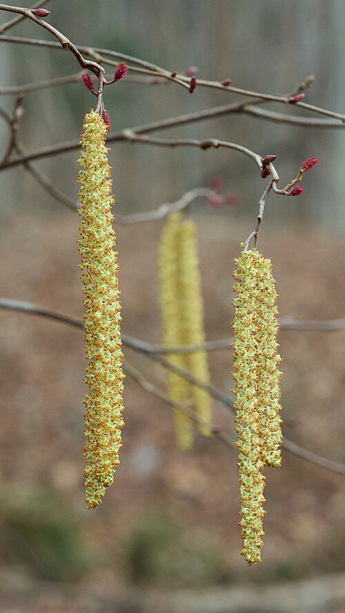

ALDER
Hazel alder Alnus serrulata
Living thing
Hazel alder lines streams across Virginia, often as a thicket of shrubby stems along the bank. Knobby nodules on its roots house Frankia, bacteria that fix nitrogen, turning nitrogen gas from the air into compounds plants can use. Because of that partnership, alders can take hold on raw, nutrient-poor ground and leave the soil richer for the plants that follow.
Biology Unit 10 · Ecology
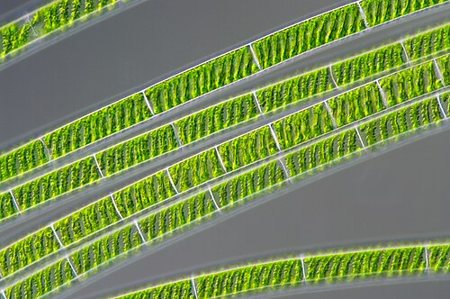

ALGAE
Spirogyra (pond silk) Spirogyra
Group of living things
Each green thread of Spirogyra is a chain of cylindrical cells joined end to end, and inside every cell a ribbon-shaped chloroplast winds in a spiral. The threads tangle into the slippery mats that float on ponds in spring, the stuff people call pond scum. Under a microscope, that green spiral shows exactly where photosynthesis happens inside the cell.
Biology Unit 8 · Classification & BiodiversityDE Biology Unit 8 · Photosynthesis
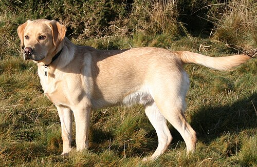
.jpg){kind=link}
ALLELE
Labrador retriever Canis familiaris
Biology word
An allele is one version of a gene, and a Labrador's coat color comes down to which alleles it carries at two genes.
Gene B sets the pigment color: black (B) is dominant over chocolate brown (b). Gene E controls whether that pigment reaches the hair at all, and a dog with two recessive e alleles is yellow whatever it carries at B. One gene masking another this way is called epistasis, which is why two yellow Labs produce only yellow puppies.
Biology Unit 6 · Genetics & HeredityDE Biology Unit 11 · Mendel and the Gene Idea
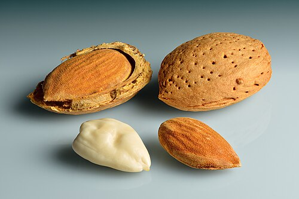

ALMOND
In use 2026–27
Almond Prunus dulcis
Living thing
An almond is the seed of a fruit closely related to the peach; the leathery hull splits open around a hard shell instead of turning soft and sweet. Wild almonds are bitter and carry a compound that releases cyanide when chewed. A single inherited change in one gene switched that pathway off, and early farmers in the Near East kept the sweet trees.
Biology Unit 8 · Classification & BiodiversityBiology Unit 10 · Ecology
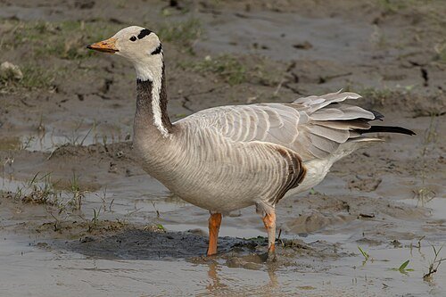

ALVEOLI
Bar-headed goose Anser indicus
Biology word
Alveoli are the tiny air sacs where your lungs trade gases with the blood, and birds like this goose breathe well without them.
A bird's lungs are stiff and have no alveoli; instead, a set of air sacs pumps air in one direction through tiny tubes, so fresh air crosses the gas-exchange surface during both inhaling and exhaling. Bar-headed geese rely on that system to migrate over the Himalayas between Central Asia and India. Tracked geese mostly follow valleys and passes, and the highest one recorded reached 7,290 meters.
Biology Unit 3 · Cell Energetics
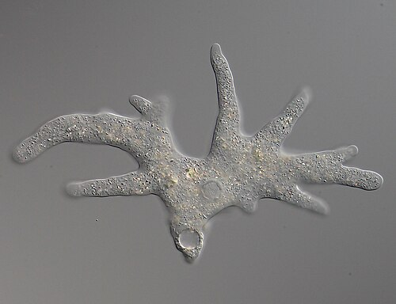

AMOEBA
Giant amoeba Amoeba proteus
Living thing
With no fixed shape, Amoeba proteus moves by flowing its cytoplasm forward into pseudopods, meaning "false feet." The same arms wrap around a smaller cell and pull it inside a food vacuole, a process called phagocytosis. Living in fresh water, the amoeba constantly takes on water by osmosis, so a contractile vacuole fills up and squeezes the extra water back out.
Biology Unit 8 · Classification & BiodiversityDE Biology Unit 5 · Membrane Transport and Cell Signaling
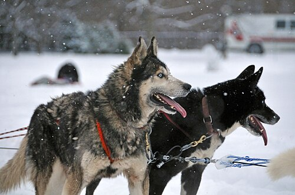

AMYLASE
Dog Canis familiaris
Biology word
Amylase is the enzyme that breaks starch into sugar, and dogs carry extra copies of one gene for it.
Erik Axelsson led a 2013 study that compared dog and wolf genomes and found that dogs carry more copies of AMY2B, a gene for pancreatic amylase, than wolves do. The extra copies help dogs digest starch. The researchers linked the change to thousands of years of living beside early farmers and eating their starchy leftovers, natural selection shaping one species alongside our own.
Biology Unit 7 · EvolutionDE Biology Unit 6 · An Introduction to Metabolism
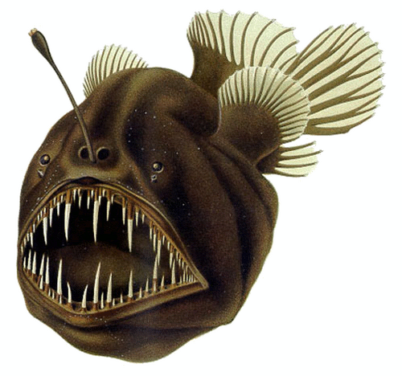

ANGLER
Humpback anglerfish Melanocetus johnsonii
Living thing
Usually between about 100 and 1,500 meters down, in water that is dim or completely dark, a female humpback anglerfish dangles a glowing lure from a rod on her head. Bioluminescent bacteria living inside the lure make the light, which draws prey toward her huge, toothy mouth. Males stay under 3 centimeters long; in this species they grip a female only briefly, while males of some other anglerfish fuse to the female for life.
Biology Unit 10 · Ecology
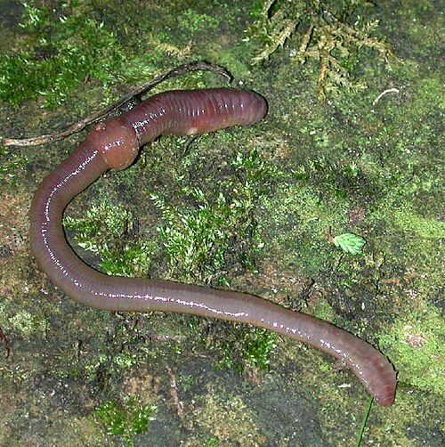

ANNELID
Common earthworm (nightcrawler) Lumbricus terrestris
Living thing
Charles Darwin's last book, published in 1881, was about earthworms and how much soil they move. A nightcrawler swallows soil and dead leaves as it tunnels, then leaves behind nutrient-rich castings, while its burrows let air and rain soak in. Its ring-shaped segments mark it as an annelid, and in Virginia it is a European import that arrived with soil and plants.
Biology Unit 10 · Ecology
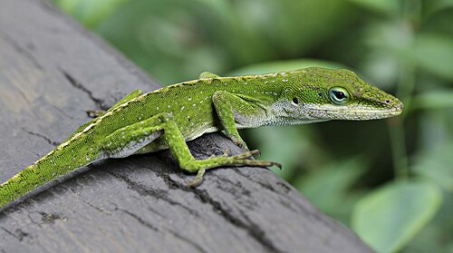

ANOLE
Green anole Anolis carolinensis
Living thing
After brown anoles from Cuba invaded small islands in Florida, native green anoles moved higher into the trees within months. Over about 15 years, roughly 20 generations, the island green anoles evolved bigger toe pads with more sticky scales for gripping thin, slick branches up high. Yoel Stuart and colleagues reported the change in Science in 2014, evolution fast enough to measure.
Biology Unit 7 · EvolutionDE Biology Unit 17 · Evolution of Populations
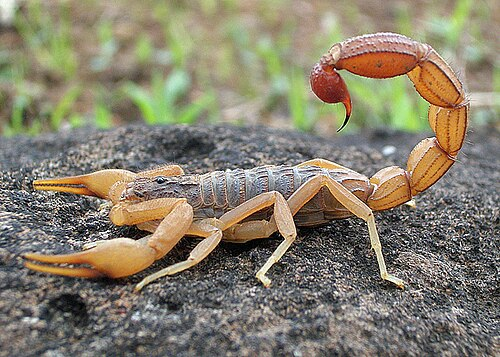

ANTARES
Scorpions Scorpiones
Sky name
Antares is the red star at the heart of the constellation Scorpius, the scorpion.
Under an ultraviolet flashlight at night, a real scorpion glows blue-green. The light comes from compounds in the hyaline layer, a thin, clear coat in the outer cuticle of its exoskeleton. Biologists still debate what the glow does for the animal; one idea is that it helps a scorpion sense faint ultraviolet light and decide when to stay hidden.
Biology Unit 8 · Classification & Biodiversity
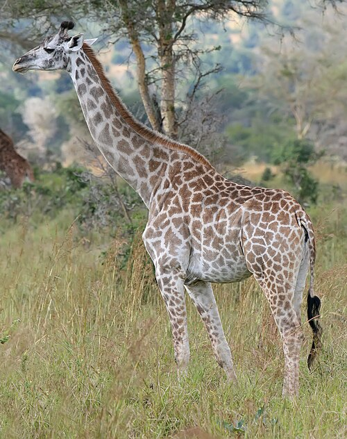

AORTA
Giraffe Giraffa camelopardalis
Biology word
The aorta is the main artery leaving the heart, and a giraffe's has to send blood up one of the longest necks in the animal world.
To lift blood about two meters up to the brain, a giraffe runs a blood pressure roughly twice a human's. The left ventricle, the chamber that pumps into the aorta, has an extra-thick muscular wall, and artery walls in the legs are thick too, so they hold up under the pressure. Tight skin on the lower legs works like a compression stocking and keeps fluid from pooling.
Biology Unit 3 · Cell Energetics
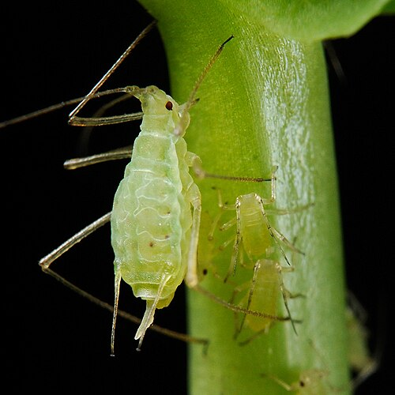
-PLoS.jpg){kind=link}
APHID
Pea aphid Acyrthosiphon pisum
Living thing
Pea aphids pierce a plant's phloem, the tissue that carries sugary sap, and drink. Sap is mostly sugar, so each aphid depends on Buchnera, bacteria housed inside special cells in its body that build the essential amino acids the diet lacks. Through summer, females give birth to live daughters without mating, and those daughters already carry developing young of their own.
Biology Unit 9 · Bacteria & Viruses
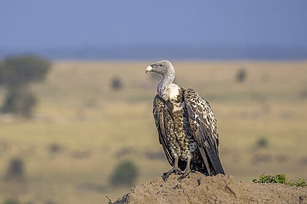
_Serengeti.jpg){kind=link}
APOGEE
Rüppell's vulture Gyps rueppelli
Sky name
An apogee is the highest or farthest point of an orbit, and no bird has been recorded flying higher than this vulture.
On 29 November 1973, a Rüppell's vulture was pulled into an airliner's engine over Abidjan, Ivory Coast, at about 11,300 meters (37,000 feet), and the plane landed safely. Air at that height holds little oxygen, and this vulture's hemoglobin binds oxygen unusually tightly. The species is now critically endangered, hurt by poisoning and habitat loss across Africa.
Biology Unit 3 · Cell Energetics
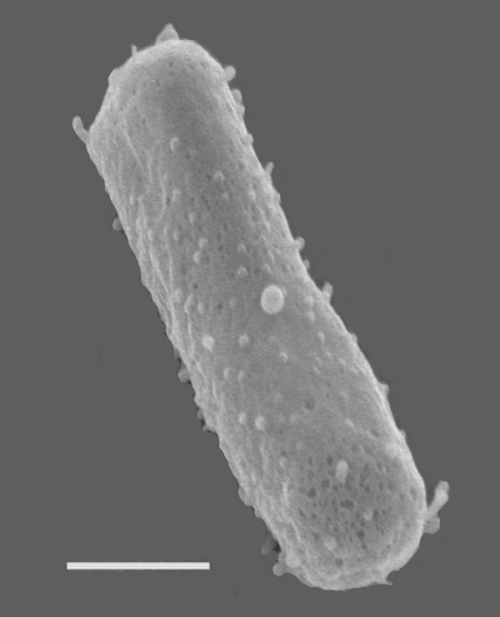

ARCHAEA
Halobacterium Halobacterium salinarum
Group of living things
In 1977, Carl Woese and George Fox compared ribosomal RNA across microbes and found that some "bacteria" belonged to a separate branch of life, now the domain Archaea. Halobacterium salinarum thrives in brine close to saturation with salt. Its red-orange pigments help tint salt-evaporation ponds pink, and a purple membrane protein, bacteriorhodopsin, uses light to pump protons and help make ATP.
Biology Unit 8 · Classification & Biodiversity
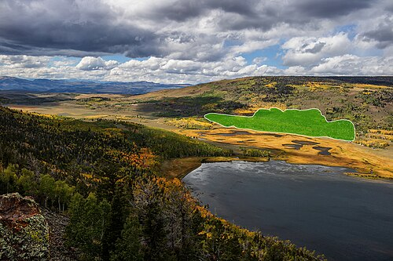

ASPEN
Quaking aspen (Pando) Populus tremuloides
Living thing
In Utah's Fishlake National Forest, about 47,000 aspen trunks covering roughly 43 hectares (106 acres) make up one organism. Pando, as the clone is called, spreads by sending up new stems from a single shared root system, a form of asexual reproduction, so every trunk has the same DNA. Each trunk lives about a century, but the root system has persisted for thousands of years.
Biology Unit 5 · Cell Growth, Division & Specialization
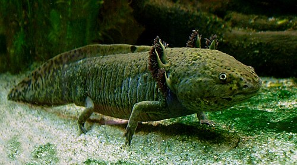

AXOLOTL
Axolotl Ambystoma mexicanum
Living thing
An axolotl keeps its larval look for life, feathery external gills and all, and still matures and breeds in water. It can regrow lost limbs, parts of its spinal cord and heart, and even pieces of its brain, which makes it a leading model for studying regeneration. In the wild it lives only in the canals of Lake Xochimilco in Mexico City, where it is critically endangered.
Biology Unit 5 · Cell Growth, Division & SpecializationDE Biology Unit 15 · Development, Stem Cells, and Cancer
B
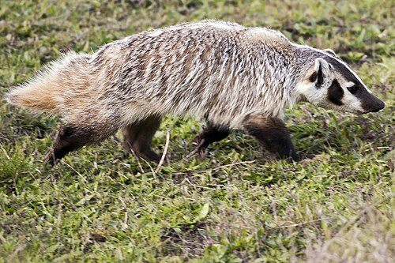
.jpg){kind=link}
BADGER
In use 2026–27
American badger Taxidea taxus
Living thing
Across the American West, badgers and coyotes sometimes hunt ground squirrels together. The badger digs into burrows while the coyote waits above to chase anything that bolts, and field studies found coyotes hunting with a badger catch more squirrels than coyotes alone. A video released in 2020 from a wildlife camera in a highway culvert near Gilroy, California, shows a coyote leading a badger through.
Biology Unit 10 · Ecology
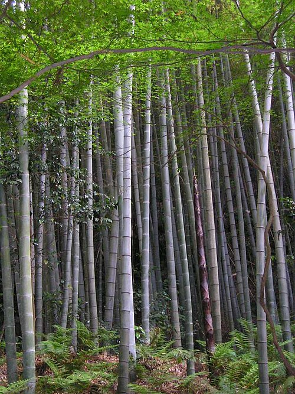

BAMBOO
In use 2026–27
Moso bamboo Phyllostachys edulis
Living thing
Bamboo is a grass, and some kinds stretch nearly a meter in a single day. Each new shoot comes up already as wide as it will ever be; the growth is cells lengthening between nodes that were laid down underground. Many bamboos flower only once every few decades, often every plant of a species at once, and then die.
Biology Unit 5 · Cell Growth, Division & SpecializationBiology Unit 8 · Classification & Biodiversity
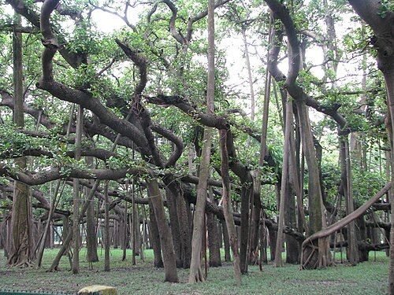

BANYAN
In use 2026–27
Banyan fig Ficus benghalensis
Living thing
A banyan often starts life as a seed dropped by a bird high in another tree. Its roots grow down through the air, reach the soil and thicken into trunks, until one tree can cover an area the size of a city block. Each fig species depends on its own tiny wasp to pollinate the flowers hidden inside the fig.
Biology Unit 8 · Classification & BiodiversityBiology Unit 10 · Ecology
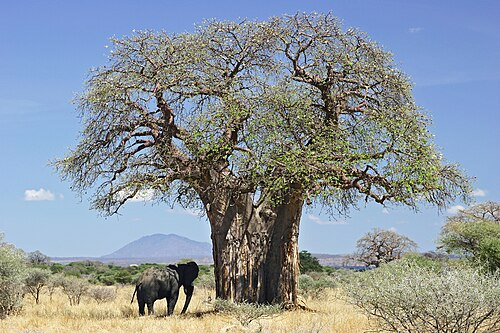

BAOBAB
In use 2026–27
African baobab Adansonia digitata
Living thing
The baobab stores water in a soft, spongy trunk that swells in the rainy season and shrinks in the dry months of the African savanna. Its large white flowers open at night and are pollinated by fruit bats. Some living baobabs have been dated to more than a thousand years old.
Biology Unit 8 · Classification & BiodiversityBiology Unit 10 · Ecology
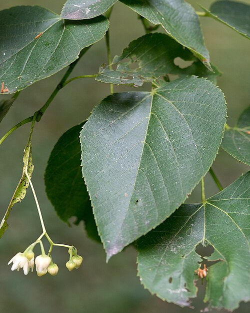
_(28268263222).jpg){kind=link}
BASSWOOD
In use 2026–27
American basswood Tilia americana
Living thing
Basswood grows in Virginia forests and is easy to know by its big, lopsided, heart-shaped leaves. In early summer its small, fragrant flowers hang from a pale leafy strap, and bees work them so heavily that beekeepers sell basswood honey by name. The soft, light wood has long been a favorite for carving.
Biology Unit 10 · Ecology
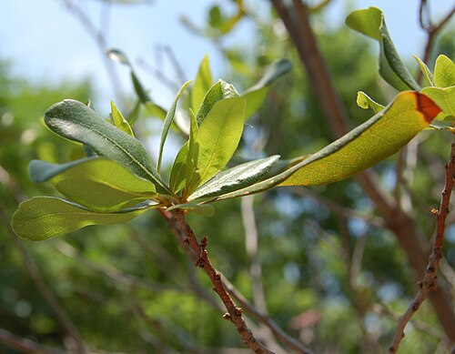

BAYBERRY
In use 2026–27
Northern bayberry Morella pensylvanica
Living thing
Bayberry grows on Atlantic coast dunes, where the sand holds almost no nitrogen. Nodules on its roots house Frankia bacteria that fix nitrogen from the air, so the shrub feeds itself and enriches the soil around it. Its gray berries are coated in wax that colonists boiled off to make candles, and the wax lets yellow-rumped warblers eat them through the winter.
Biology Unit 9 · Bacteria & VirusesBiology Unit 10 · Ecology
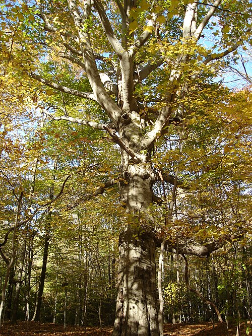

BEECH
American beech Fagus grandifolia
Living thing
Smooth gray bark makes the American beech easy to spot in a Virginia forest, and its beechnuts feed black bears, wild turkeys and many other animals in fall. Beech leaf disease, linked to a tiny nematode worm called Litylenchus crenatae, was first found in Ohio in 2012. Virginia's first confirmed case, reported in 2021, was in Prince William County.
Biology Unit 10 · Ecology
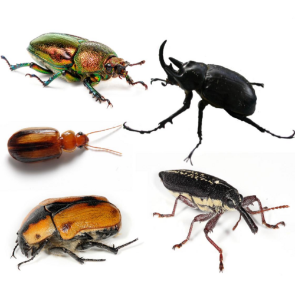

BEETLE
In use 2026–27
Beetles order Coleoptera
Group of living things
BEETLE names the largest order of animals, so a whole order stands in here.
Beetles make up the largest order of animals on Earth, with roughly 400,000 named species. A beetle's front wings have hardened into shell-like covers called elytra that fold over the flying wings. When asked what his studies revealed about a creator, the biologist J. B. S. Haldane is said to have answered that it showed an inordinate fondness for beetles.
Biology Unit 7 · EvolutionBiology Unit 8 · Classification & Biodiversity
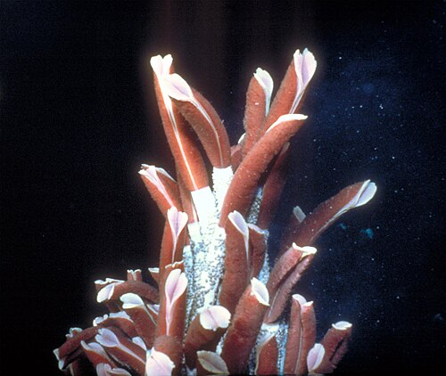
_(Ifremer_00530-64223_-_52381).jpg){kind=link}
BENTHIC
Giant tube worm Riftia pachyptila
Habitat
The benthic zone is the sea floor, and some of its strangest residents live beside deep-sea hot springs.
Giant tube worms grow in clusters around hydrothermal vents on the Pacific sea floor, far below the reach of sunlight. Adults have no mouth and no gut. Their red plumes, colored by hemoglobin, collect hydrogen sulfide and oxygen from the water for bacteria living inside the worm, and the bacteria use chemosynthesis, making food from chemicals instead of sunlight, to feed their host.
Biology Unit 10 · EcologyDE Biology Unit 8 · Photosynthesis
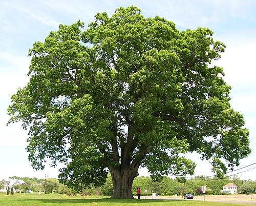

BIOME
White oak Quercus alba
Habitat
A biome is a large region defined by its climate and plant life; Virginia lies in the temperate deciduous forest biome, where oaks anchor the woods.
Oaks feed more kinds of caterpillars than any other group of North American trees. Doug Tallamy and Kimberley Shropshire counted 557 species of moths and butterflies whose caterpillars eat oaks in the Mid-Atlantic region alone. Those caterpillars feed nesting songbirds, and white oak acorns feed deer, turkeys and squirrels, which puts a single white oak at the center of a forest food web.
Biology Unit 10 · Ecology
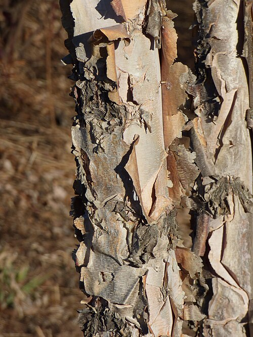

BIRCH
River birch Betula nigra
Living thing
River birch grows wild along Virginia's rivers and floodplains, and its bark peels in papery curls of salmon, tan and cream. Unlike most birches, it ripens its seeds in late spring, just as high water drops and leaves bare, wet mud behind. Seeds landing on that fresh ground sprout quickly, which makes river birch a pioneer species on newly exposed banks.
Biology Unit 10 · Ecology
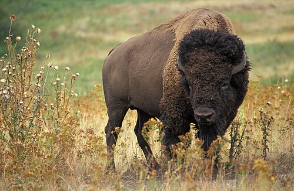

BISON
In use 2026–27
American bison Bison bison
Living thing
Tens of millions of bison once grazed North America. Market hunting in the 1800s cut them to roughly a thousand animals by the late 1880s, and a few protected herds, including one in Yellowstone, kept the species alive. Grazing bison keep grasslands open, and the shallow dust wallows they roll in collect rainwater that frogs, insects and plants use.
Biology Unit 10 · Ecology
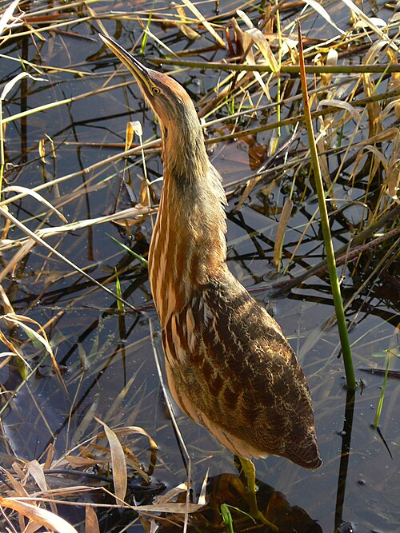

BITTERN
In use 2026–27
American bittern Botaurus lentiginosus
Living thing
The American bittern hides in cattail marshes by pointing its bill straight up and freezing, so its brown streaks blend with the reeds; it even sways when the reeds move. In spring it calls with a deep, gulping pump that carries across the marsh. Draining of wetlands has made it hard to find in much of its range.
Biology Unit 7 · EvolutionBiology Unit 10 · Ecology
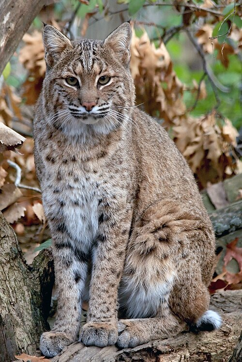

BOBCAT
In use 2026–27
Bobcat Lynx rufus
Living thing
The bobcat is Virginia's only native wild cat, about twice the size of a house cat, with a short, black-tipped tail. It hunts rabbits, rodents and birds at dawn and dusk and lives in forests, swamps and even suburban edges. Its scientific name places it in the same genus as the lynx.
Biology Unit 8 · Classification & BiodiversityBiology Unit 10 · Ecology
C
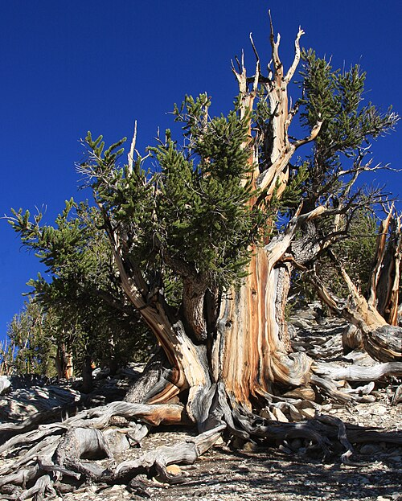

CAMBIUM
Great Basin bristlecone pine Pinus longaeva
Biology word
The vascular cambium is a thin layer of dividing cells under the bark, and each year it adds one growth ring to a tree.
Great Basin bristlecone pines grow slowly on cold, dry mountain slopes in California, Nevada and Utah, and their dense, resin-filled wood resists rot and insects. A tree in California's White Mountains nicknamed Methuselah is more than 4,800 years old by ring count, so its cambium has been laying down wood since before the Great Pyramid of Giza was built.
Biology Unit 5 · Cell Growth, Division & SpecializationDE Biology Unit 9 · The Cell Cycle
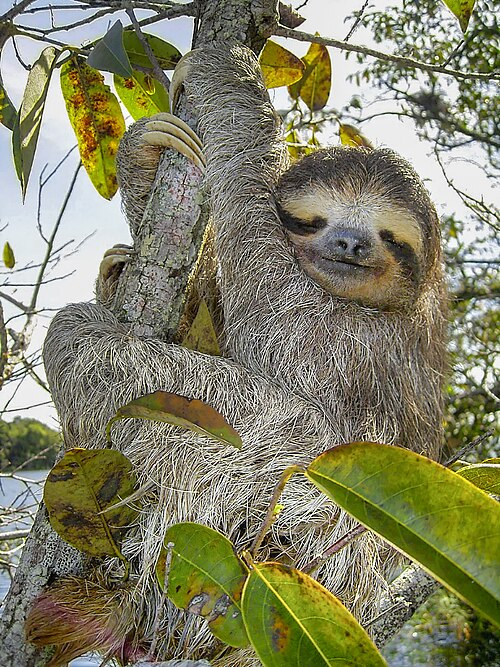

CANOPY
In use 2026–27
Brown-throated sloth Bradypus variegatus
Habitat
The canopy is the leafy upper layer of a forest, and this sloth spends nearly its whole life there.
Brown-throated sloths move so little that green algae grow in grooves in their fur, tinting them the color of the leaves around them. Moths live in the fur too. About once a week a sloth climbs down to the forest floor to defecate, female moths lay eggs in the dung, and a 2014 study proposed that the moths carry nutrients that help the algae grow.
Biology Unit 10 · Ecology
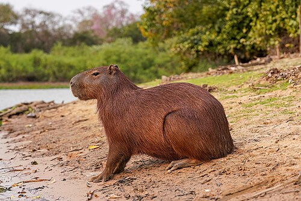

CAPYBARA
Capybara Hydrochoerus hydrochaeris
Living thing
Capybaras are the largest living rodents, commonly weighing 35 to 66 kilograms, and they live in groups near rivers and marshes in South America. Their eyes, ears and nostrils sit high on the head, so they can stay nearly submerged, and their feet are slightly webbed. Grass is hard to digest, so they eat some of their own feces to give gut microbes a second pass at the plant fiber.
Biology Unit 8 · Classification & Biodiversity
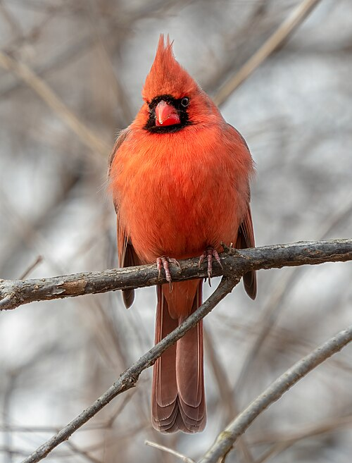
.jpg){kind=link}
CARDINAL
In use 2026–27
Northern cardinal Cardinalis cardinalis
Living thing
The northern cardinal is Virginia's state bird. A male's red comes from carotenoid pigments in the seeds and fruit he eats, so a brighter male is often a better-fed one. Rare cardinals have been seen that are half red and half brown down the middle, a male side and a female side, from an error in early cell division.
Biology Unit 6 · Genetics & HeredityBiology Unit 7 · Evolution
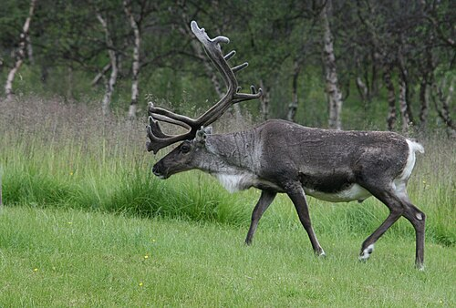

CARIBOU
Caribou (reindeer) Rangifer tarandus
Living thing
Caribou make the longest migrations of any land animal, with some herds traveling more than 1,200 kilometers round-trip each year. Their eyes detect ultraviolet light, which makes lichen and wolf fur stand out as dark shapes against bright, UV-reflecting snow. The reflective layer behind the retina also shifts from gold in summer to deep blue in the long Arctic winter, which appears to help them see in dim light.
Biology Unit 10 · Ecology
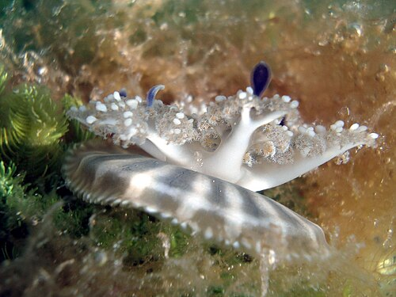

CASSIOPEIA
Upside-down jellyfish Cassiopea
Sky name
The jellyfish genus Cassiopea shares its name with Cassiopeia, the mythical queen whose constellation circles the North Star.
Cassiopea lies bell-down on shallow sandy bottoms with its frilly arms facing up, so the algae living in its tissue get sunlight for photosynthesis and share the food they make. In 2017, a Caltech team reported that these jellyfish pulse less at night, respond more slowly when disturbed, and catch up after being kept awake. They were the first animals without a brain shown to have a sleep-like state.
Biology Unit 8 · Classification & Biodiversity
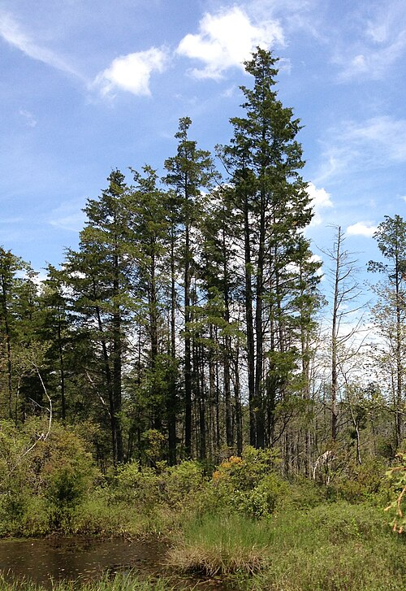

CEDAR
Atlantic white cedar Chamaecyparis thyoides
Living thing
Atlantic white cedar is an evergreen conifer of coastal peat swamps, and the Great Dismal Swamp of Virginia and North Carolina once held some of the largest stands in the world. Centuries of logging took most of them, and in 2003 Hurricane Isabel flattened about 85 percent of the refuge's mature cedar stands in a single day. Refuge managers have since worked to replant and restore it.
Biology Unit 10 · Ecology
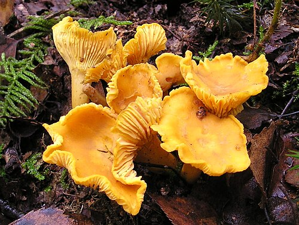

CHANTERELLE
In use 2026–27
Golden chanterelle Cantharellus cibarius
Living thing
A chanterelle is the fruiting body of a fungus whose threads wrap the roots of living trees. The fungus pulls water and minerals from the soil for the tree, and the tree pays in sugar made by photosynthesis. Instead of true gills, its underside carries blunt, forked ridges.
Biology Unit 8 · Classification & BiodiversityBiology Unit 10 · Ecology
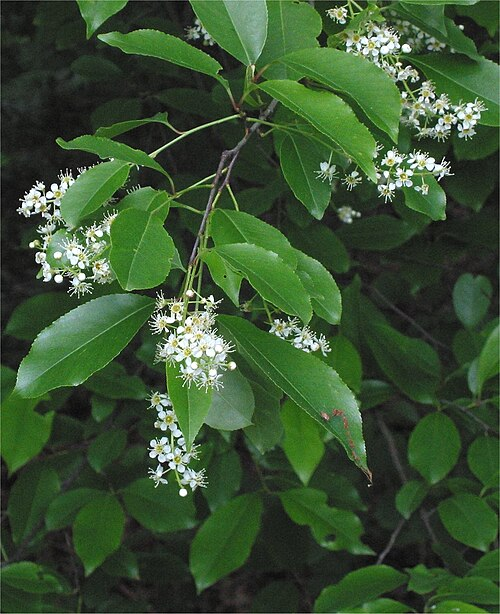

CHERRY
In use 2026–27
Black cherry Prunus serotina
Living thing
Black cherry is a common Virginia tree, with dark, flaky bark that looks like burnt potato chips. Birds eat the small fruits and spread the seeds in their droppings. Its wilted leaves make cyanide, which can poison livestock, a chemical defense many plants in the rose family share.
Biology Unit 3 · Cell EnergeticsBiology Unit 10 · Ecology
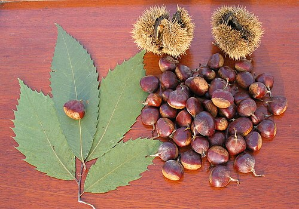

CHESTNUT
In use 2026–27
American chestnut Castanea dentata
Living thing
American chestnut was once a major tree of Appalachian forests, and its nuts fed people, livestock and wildlife. In 1904, forester Hermann Merkel noticed a blight at the New York Zoological Park, now the Bronx Zoo; the fungus behind it, Cryphonectria parasitica, came from Asia and killed an estimated three to four billion trees. Roots survive and keep sprouting, and scientists are breeding and engineering blight-resistant trees.
Biology Unit 8 · Classification & Biodiversity
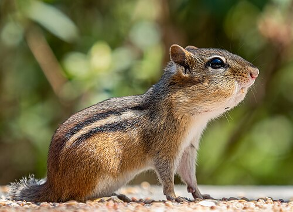
.jpg){kind=link}
CHIPMUNK
In use 2026–27
Eastern chipmunk Tamias striatus
Living thing
An eastern chipmunk carries seeds and nuts in stretchy cheek pouches back to a single burrow, where it can store thousands for winter. Through the cold months it drops into short bouts of torpor, lowering its body temperature and heart rate, then wakes to eat from its larder. In doing so it plants many of the seeds it forgets.
Biology Unit 3 · Cell EnergeticsBiology Unit 10 · Ecology
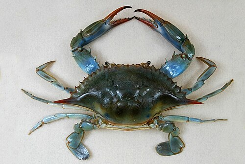

CHITIN
Atlantic blue crab Callinectes sapidus
Biology word
Chitin is the tough polysaccharide that builds crab shells, insect exoskeletons and the cell walls of fungi.
A blue crab's shell is chitin, a chain of modified glucose units that carry nitrogen, hardened with calcium. The shell cannot stretch, so the crab grows by molting: it backs out of the old shell and swells with water before the new one hardens, and for those few hours it is a soft-shell crab. The Chesapeake Bay's signature animal has a fitting name, Callinectes sapidus, "beautiful savory swimmer."
Biology Unit 2 · Cell Structure & FunctionDE Biology Unit 3 · Carbon and Molecular Diversity of Life
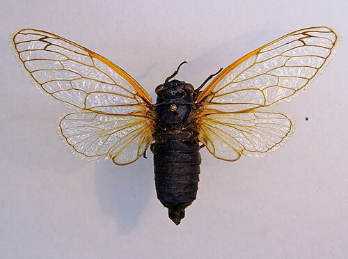

CICADA
Periodical cicada Magicicada
Living thing
Periodical cicadas spend 13 or 17 years underground as nymphs, sipping sap from tree roots, then dig out by the millions within a few weeks. Brood X emerged across parts of Northern Virginia and much of the eastern United States in 2021. Birds and other predators eat until they are full and still most cicadas survive to mate, a strategy called predator satiation.
Biology Unit 10 · Ecology
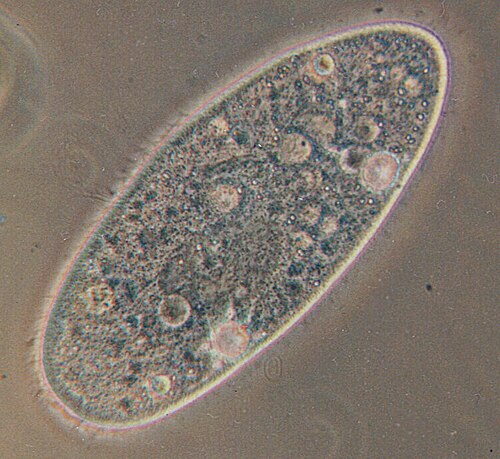

CILIA
Paramecium Paramecium caudatum
Biology word
Cilia are tiny hair-like structures that beat in waves, and a paramecium is covered with thousands of them.
Paramecium, a single cell shaped like the sole of a slipper, is common in pond water. Rows of beating cilia drive it forward in a spiral and sweep bacteria into its oral groove, a funnel that leads to food vacuoles where digestion happens. When it bumps into something, it reverses the beat, backs up, turns and tries a new direction.
Biology Unit 3 · Cell EnergeticsDE Biology Unit 4 · Tour of the Cell
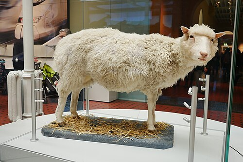

CLONE
Dolly the sheep Ovis aries
Biology word
A clone is an organism with the same DNA as another, and Dolly was the first mammal cloned from an adult body cell.
Dolly was born on 5 July 1996 at the Roslin Institute in Scotland. Scientists took the nucleus from a mammary gland cell of a six-year-old ewe, placed it into an egg cell whose own nucleus had been removed, and grew the embryo in a surrogate mother. The experiment showed that a specialized adult cell still holds all the genes needed to build a whole animal.
Biology Unit 5 · Cell Growth, Division & SpecializationDE Biology Unit 15 · Development, Stem Cells, and Cancer
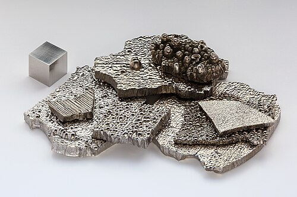

COBALT
In use 2026–27
Cobalt, the metal in vitamin B12 Co, element 27
Earth name
Cobalt is a metal, and life uses it at the center of vitamin B12, a molecule only microbes can make.
Cobalt sits at the center of vitamin B12, which every animal needs to make DNA and healthy red blood cells. No plant or animal can build B12 itself; only certain bacteria and archaea can. Cows and sheep get theirs from microbes in the gut, and people get it mostly from animal foods.
Biology Unit 2 · Cell Structure & FunctionBiology Unit 9 · Bacteria & Viruses
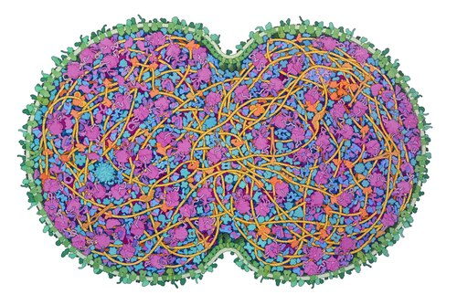
CODON
Mycoplasma Mycoplasma mycoides
Biology word
A codon is a three-letter unit of the genetic code, and Mycoplasma reads one of them differently from most living things.
In nearly all organisms the codon UGA means stop, but Mycoplasma bacteria read it as the amino acid tryptophan, and these tiny bacteria lack a cell wall entirely. In 2016, researchers at the J. Craig Venter Institute built JCVI-syn3.0, a cell running on a synthetic, stripped-down Mycoplasma mycoides genome of just 473 genes, to ask how few genes a living cell needs.
Biology Unit 4 · Nucleic Acids & Protein SynthesisDE Biology Unit 14 · Gene Expression: From Gene to Protein
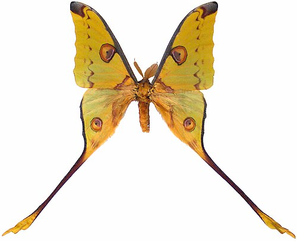

COMET
Comet moth Argema mittrei
Sky name
A comet trails a long tail across the sky, and the male comet moth trails a pair of its own.
Male comet moths in the rainforests of Madagascar spread wings about 20 centimeters across, with twin yellow tails up to 15 centimeters long. Adults cannot feed. Everything they need for their brief adult life, only several days, comes from energy the caterpillar stored, so the adult's one job is to find a mate and reproduce.
Biology Unit 8 · Classification & Biodiversity
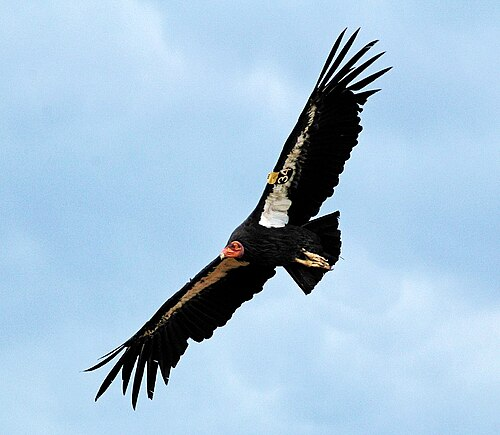
.jpg){kind=link}
CONDOR
California condor Gymnogyps californianus
Living thing
Only 27 California condors were left in 1987, all in captivity, after biologists captured the last wild bird and began breeding the species for release. More than 600 live today, about two-thirds of them flying free, yet lead from bullet fragments in the carcasses they scavenge remains the main killer. In 2021, scientists reported two chicks hatched from unfertilized eggs, the first known virgin births in the species.
- Public-domain art: Californian Vulture, Plate 426, The Birds of America, John James Audubon

Biology Unit 10 · Ecology
.jpg){kind=link}
COPPER
In use 2026–27
Copper, in the blue blood of horseshoe crabs Cu, element 29; Limulus polyphemus
Earth name
Copper is a metal, and the horseshoe crab carries oxygen in its blood with a copper protein.
Horseshoe crabs carry oxygen with hemocyanin, a protein built around copper rather than iron, so their blood turns blue in air. Their blood cells clot at the faintest trace of bacterial toxin, and medicine has used that reaction for decades to test vaccines and injected drugs for contamination. The crabs crowd Chesapeake and Delaware Bay beaches each spring to spawn.
Biology Unit 2 · Cell Structure & FunctionBiology Unit 10 · Ecology

CORAL
Elkhorn coral Acropora palmata
Living thing
Elkhorn coral builds broad, antler-shaped branches on shallow reefs in Florida and the Caribbean. Each branch is covered in polyps, small animals related to jellyfish, and their tissue holds algae called zooxanthellae that make food by photosynthesis and share it. When the water stays too hot, the corals expel the algae and turn white, which is called bleaching; without the algae, a coral can starve.
- On this site: Warming Seas, Dying Reefs: Coral in Florida
Biology Unit 10 · Ecology

CORNEA
Peacock mantis shrimp Odontodactylus scyllarus
Biology word
The cornea is the clear front surface of an eye, and few eyes work like this shrimp's.
Human eyes use three kinds of color receptors; the peacock mantis shrimp has twelve, and it can also detect polarized light, including circularly polarized light. It hunts with a pair of club-like appendages that strike at more than 80 kilometers per hour, hard enough to smash snail shells, and large ones have broken aquarium glass.
Biology Unit 7 · Evolution

CORONA
Coronavirus (SARS-CoV-2) SARS-CoV-2
Sky name
The Sun's corona is its glowing outer crown, and coronaviruses were named in the 1960s for a crown-like fringe seen around them under the electron microscope.
That crown is made of spike proteins, which fit a receptor on certain human cells and let the virus get inside. The mRNA vaccines carry instructions for making the spike protein, so the immune system learns to recognize it. Viruses are not cells: they have no metabolism of their own and can copy themselves only inside a host cell.
- Public-domain art: SARS-CoV-2 illustration, CDC (Alissa Eckert and Dan Higgins, 2020)
- On this site: Virus or Bacteria?
- On this site: Sixty Years of Failure: How the mRNA Vaccine Really Happened

Biology Unit 9 · Bacteria & Viruses

CORTEX
Star-nosed mole Condylura cristata
Biology word
The cortex is the brain's outer layer, and in this mole about half of the touch-processing part of it is given to the nose.
The star on this mole's snout is 22 fleshy rays covered with about 25,000 tiny touch receptors called Eimer's organs. Sweeping the star across mud, a star-nosed mole can identify and swallow a small worm or insect larva in as little as 120 milliseconds. It lives in wet soil and marshes, including in Virginia, and can even sniff underwater by blowing bubbles and breathing them back in.
Biology Unit 3 · Cell Energetics

COSMOS
In use 2026–27
Garden cosmos Cosmos bipinnatus
Living thing
Garden cosmos is a daisy-family flower from Mexico. What looks like one flower is a head of many small flowers packed together, with ray flowers around the rim and disc flowers in the center. Spanish priests are said to have named it cosmos, Greek for order and harmony, for its evenly spaced petals.
Biology Unit 6 · Genetics & HeredityBiology Unit 8 · Classification & Biodiversity

COYOTE
In use 2026–27
Coyote Canis latrans
Living thing
Coyotes began as animals of the western plains and deserts, then spread east through the 1900s as wolves disappeared and forests were cleared. By the 1990s they were living in Virginia, and today they are found in every county. DNA studies show that many eastern coyotes carry some wolf ancestry picked up along the way, along with a smaller share of dog ancestry.
Biology Unit 10 · Ecology

CRANE
Whooping crane Grus americana
Living thing
At about 1.5 meters, the whooping crane is the tallest bird in North America. Hunting and the draining of wetlands left only 21 in the wild by 1941. Legal protection, captive breeding, and experiments such as leading young cranes on their first migration behind ultralight aircraft (2001 to 2015) have brought the total to more than 800, though the species is still endangered.
- Hear its call on xeno-canto
- Public-domain art: Hooping Crane, Plate 226, The Birds of America, John James Audubon

Biology Unit 10 · Ecology

CRICKET
In use 2026–27
Field cricket Gryllus pennsylvanicus
Living thing
A male field cricket sings by drawing a scraper on one front wing across a file of ridges on the other. His ears are on his front legs. Crickets chirp faster as the air warms, because their muscles run on chemical reactions that speed up with temperature.
Biology Unit 7 · EvolutionBiology Unit 10 · Ecology

CROCUS
In use 2026–27
Spring crocus Crocus vernus
Living thing
A crocus can bloom through late snow because it lives off food stored in an underground corm made the summer before. Its flowers close at night and in cold weather and open again in warm sun. Saffron, the costly spice, is the dried red stigma of a related crocus, picked by hand.
Biology Unit 8 · Classification & BiodiversityBiology Unit 10 · Ecology

CUTICLE
Sacred lotus Nelumbo nucifera
Biology word
A plant's cuticle is the waxy layer coating its leaves, and the lotus leaf's cuticle keeps the leaf almost perfectly clean.
Water on a lotus leaf beads into near-perfect spheres and rolls off, picking up dust as it goes. Microscopic wax-coated bumps let water touch only their tips, so cohesion, the pull of water molecules on one another, holds each drop together instead of letting it spread. Lotus seeds last, too: one from a dry lakebed in China sprouted at about 1,300 years old.
Biology Unit 2 · Cell Structure & Function

CYPRESS
In use 2026–27
Bald cypress Taxodium distichum
Living thing
Bald cypress is a conifer that drops its needles every fall, which is how it earned the name. It grows in standing water in southern swamps, including in southeastern Virginia, and woody knees rise from its roots above the waterline. Along North Carolina's Black River, David Stahle's team dated one living tree at 2,624 years old in 2019.
Biology Unit 10 · Ecology

CYTOPLASM
Many-headed slime mold Physarum polycephalum
Biology word
Cytoplasm is everything inside a cell's membrane outside the nucleus, and in this slime mold it visibly flows.
Physarum polycephalum can spread as a single yellow cell many centimeters across, holding countless nuclei in one shared cytoplasm. That cytoplasm streams back and forth through a network of tubes every minute or two, carrying nutrients. In 2010, Atsushi Tero and colleagues set oat flakes in the pattern of cities around Tokyo, and the slime mold grew a network much like the real rail system.
Biology Unit 3 · Cell EnergeticsDE Biology Unit 4 · Tour of the Cell
.png){kind=link}
CYTOSOL
Tardigrade (water bear) Tardigrada
Biology word
The cytosol is the watery fluid inside a cell, and tardigrades can survive losing almost all of it.
Tardigrades, or water bears, are eight-legged animals under a millimeter long that live in moss, soil and films of water. As they dry out, they curl into a shriveled "tun" and can last for years until rain returns. In 2017, Thomas Boothby and colleagues reported that some tardigrades make disordered proteins called CAHS proteins as they dry, and the proteins seem to turn the cytosol into a protective glass-like solid.
Biology Unit 2 · Cell Structure & Function
D

DAISY
In use 2026–27
Oxeye daisy Leucanthemum vulgare
Living thing
An oxeye daisy is a composite: each yellow center holds hundreds of tiny disc flowers, and every white petal is a separate ray flower. Brought from Europe, it now crowds roadsides and pastures across North America. A single plant can scatter thousands of seeds that stay alive in the soil for years.
Biology Unit 8 · Classification & BiodiversityBiology Unit 10 · Ecology

DAMSELFLY
In use 2026–27
Ebony jewelwing Calopteryx maculata
Living thing
The ebony jewelwing is a damselfly with black wings and a metallic green body, common along shady Virginia streams. Its young live underwater as nymphs, catching prey with a hinged lower lip that shoots forward. Damselflies need clean water, so finding them is a sign of a healthy stream.
Biology Unit 7 · EvolutionBiology Unit 10 · Ecology

DANDELION
In use 2026–27
Common dandelion Taraxacum officinale
Living thing
Many dandelions set seed without pollination: each seed is a genetic copy of its parent, a kind of asexual reproduction called apomixis. The puffball holds about 150 to 200 seeds, each lifted by a parachute that can carry it for kilometers. A deep taproot lets the plant regrow after it is pulled.
Biology Unit 6 · Genetics & HeredityBiology Unit 10 · Ecology

DAPHNIA
Water flea Daphnia pulex
Living thing
Daphnia, the water flea, is a crustacean a few millimeters long with a body so clear that its beating heart shows under a microscope. When Daphnia pulex smells chemicals released by predators such as phantom midge larvae, it grows small spines on its neck, a change in body form called phenotypic plasticity. For most of the year females reproduce without males, cloning daughters until conditions turn harsh.
Biology Unit 10 · Ecology
_2.jpg){kind=link}
DEIMOS
European peacock butterfly Aglais io
Sky name
Deimos, one of Mars's two moons, is named for the Greek god of dread, and biologists use the same Greek root in "deimatic" for displays that startle a predator.
A resting peacock butterfly, wings closed, looks like a dark, dead leaf. If a bird comes close, it flicks its wings open to flash four big eyespots and rubs them together to make a hissing sound. In experiments with blue tits, the eyespots did most of the work of scaring the birds away.
Biology Unit 7 · Evolution

DENEB
Tundra swan Cygnus columbianus
Sky name
Deneb is the bright star marking the tail of Cygnus, the swan.
Tundra swans nest on Arctic tundra in Alaska and Canada, then fly thousands of kilometers to spend the winter on the Chesapeake Bay and the sounds of coastal North Carolina. Families travel together, and the gray young stay with their parents through their first winter. They feed by tipping up in shallow water to pull out underwater plants, roots and shellfish.
Biology Unit 10 · Ecology

DERMIS
African spiny mouse Acomys
Biology word
The dermis is the thick layer of skin beneath the surface, home to hair follicles, and this mouse can rebuild it.
When a predator grabs an African spiny mouse, patches of its fragile skin tear away and the mouse escapes. In 2012, Ashley Seifert and colleagues reported in Nature that the wounds heal by regrowing true skin with new hair follicles and almost no scar. Most mammals, people included, patch such wounds with scar tissue, so spiny mice are a model for studying regeneration.
Biology Unit 5 · Cell Growth, Division & SpecializationDE Biology Unit 15 · Development, Stem Cells, and Cancer

DETRITUS
Pill bug (roly-poly) Armadillidium vulgare
Habitat
Detritus is dead plant and animal matter, and the pill bug spends its life eating it.
Pill bugs are land crustaceans with seven pairs of legs, closer relatives of crabs and shrimp than of insects. A pill bug breathes through gill-like structures on its underside that must stay damp, so it hides under logs and leaf litter by day. Chewing dead leaves into fragments speeds decomposition and returns nutrients to the soil, and when threatened it rolls into a tight ball.
Biology Unit 10 · Ecology

DIATOM
Diatoms Bacillariophyta
Group of living things
Diatoms are single-celled algae that live inside a two-part shell of glass, or silica, fitted together like the halves of a petri dish. They drift in oceans, lakes and streams in huge numbers and carry out roughly a fifth of all the photosynthesis on Earth. Ernst Haeckel drew their intricate shells for Art Forms in Nature, published in parts between 1899 and 1904.
- Public-domain art: Diatomea, Plate 4, Kunstformen der Natur, Ernst Haeckel

Biology Unit 8 · Classification & BiodiversityDE Biology Unit 8 · Photosynthesis

DIPLOID
Banana Musa
Biology word
A diploid cell carries two sets of chromosomes, and wild bananas are diploid and packed with hard seeds.
The Cavendish banana sold in stores is triploid, with three sets of chromosomes. Three sets cannot pair evenly during meiosis, so the plant makes almost no working eggs or pollen, and its fruit has no hard seeds. Growers plant shoots cut from older plants, so every Cavendish is a clone, and a fungus called Tropical Race 4 spreads easily through plantations of identical, equally vulnerable plants.
Biology Unit 5 · Cell Growth, Division & SpecializationDE Biology Unit 10 · Meiosis and Sexual Life Cycles

DOGWOOD
Flowering dogwood Cornus florida
Living thing
Flowering dogwood is both Virginia's state tree and its state flower. Each spring "flower" is actually a cluster of small greenish-yellow true flowers ringed by four white bracts, which are modified leaves. In fall the tree's bright red fruits are rich in fat, and migrating birds such as thrushes eat them to fuel their trips south.
Biology Unit 8 · Classification & Biodiversity

DOLPHIN
In use 2026–27
Common bottlenose dolphin Tursiops truncatus
Living thing
Bottlenose dolphins each develop a signature whistle as calves, and other dolphins copy that whistle to call a particular individual, much like using a name. In a 2013 study, Stephanie King and Vincent Janik played recorded whistles to wild dolphins in Scotland, and dolphins answered their own. From spring through fall, bottlenose dolphins visit the Chesapeake Bay and the Potomac River, where researchers have identified more than 2,000 individuals by their fins.
Biology Unit 10 · Ecology
.jpg){kind=link}
DOVE
In use 2026–27
Mourning dove Zenaida macroura
Living thing
Mourning doves get their name from a soft, sad cooing. Both parents feed their young crop milk, a protein-rich fluid made by cells lining the throat pouch. Their wings whistle on takeoff, a sound other doves treat as an alarm.
Biology Unit 3 · Cell EnergeticsBiology Unit 10 · Ecology

DRAGONFLY
Common green darner Anax junius
Living thing
Common green darners in eastern North America migrate south each fall, and a 2018 study of hydrogen in their wing tissue found that the full yearly cycle takes three generations. Dragonflies are skilled hunters: in one lab study, four related species caught 90 to 97 percent of the flies they chased. About 300 million years ago, distant relatives called griffinflies had wings spanning about 70 centimeters.
Biology Unit 10 · Ecology
_in_the_Delaware_Bay_at_Heislerville_Wildlife_Management_Area,_New_Jersey,_USA.png){kind=link}
DUNLIN
In use 2026–27
Dunlin Calidris alpina
Living thing
Dunlins breed on Arctic tundra and winter on Atlantic mudflats, including the Virginia coast, where flocks of thousands twist and flash as one. They probe the mud with a drooping bill for worms and small clams. In breeding season they grow a black belly patch that winter birds lack.
Biology Unit 7 · EvolutionBiology Unit 10 · Ecology
E
.jpg){kind=link}
EAGLE
Bald eagle Haliaeetus leucocephalus
Living thing
The pesticide DDT built up in fish and the eagles that ate them, thinning eggshells until they broke during incubation. By 1963 only about 417 nesting pairs remained in the lower 48 states. The United States banned DDT in 1972, and eagles recovered enough to leave the endangered species list in 2007; the Chesapeake Bay region now holds one of the densest bald eagle populations in the country.
- Hear its call on xeno-canto
- Public-domain art: White-headed Eagle, Plate 31, The Birds of America, John James Audubon
.jpg){kind=link}
Biology Unit 10 · Ecology

EBONY
In use 2026–27
Ebony persimmon Diospyros ebenum
Living thing
True ebony comes from the heartwood of tropical trees in the persimmon genus, wood so dense it sinks in water. Black piano keys were once made of it, and overharvesting has made several species endangered. Virginia's common persimmon is a close relative.
Biology Unit 8 · Classification & BiodiversityBiology Unit 10 · Ecology

_in_Breeding_Plumage,_Cape_May_County,_New_Jersey,_USA_(cropped).png){kind=link}
EGRET
Great egret Ardea alba
Living thing
Plume hunters in the late 1800s shot great egrets by the thousands for aigrettes, the long lacy feathers adults grow in breeding season, to decorate women's hats. Outrage at the slaughter helped launch the early Audubon societies and led to laws including the Migratory Bird Treaty Act of 1918. The great egret recovered and became the symbol of the National Audubon Society.
Biology Unit 10 · Ecology

EMBRYO
Zebrafish Danio rerio
Biology word
An embryo is an organism in its earliest stage of development, and zebrafish embryos are clear enough to watch it happen.
Zebrafish eggs are fertilized outside the mother's body, and the embryos are nearly transparent, so scientists can watch organs form under a microscope one cell at a time. The heart starts beating about a day after fertilization, and by about five days the larva is swimming and hunting. Many zebrafish genes match human genes, which makes the fish a common model for development and disease.
Biology Unit 5 · Cell Growth, Division & SpecializationDE Biology Unit 15 · Development, Stem Cells, and Cancer

ENZYME
Thermus aquaticus Thermus aquaticus
Biology word
An enzyme is a protein that speeds up a chemical reaction, and this bacterium's enzymes keep working near boiling.
Thomas Brock's team sampled Mushroom Spring in Yellowstone National Park in 1966, and undergraduate Hudson Freeze isolated Thermus aquaticus from it. Its DNA polymerase, called Taq, keeps working at temperatures that denature most enzymes, so it survives the repeated heating steps of PCR, the polymerase chain reaction used to copy DNA. Taq made PCR fast and practical in the late 1980s.
Biology Unit 2 · Cell Structure & FunctionDE Biology Unit 6 · An Introduction to Metabolism

EQUINOX
Maryland Mammoth tobacco Nicotiana tabacum
Sky name
At an equinox, day and night are nearly equal in length, and a tobacco plant that waited for shorter days to bloom showed that plants keep track of that balance.
In 1920, USDA scientists Wightman Garner and Harry Allard reported that Maryland Mammoth tobacco grew tall all summer but flowered only once days grew short. They called the response photoperiodism, a plant's reaction to day length. Later experiments showed that short-day plants actually measure the length of the unbroken night, so a brief flash of light in the dark can keep them from flowering.
Biology Unit 3 · Cell Energetics
,_Lista,_Norway.jpg){kind=link}
ERMINE
In use 2026–27
Ermine Mustela erminea
Living thing
The ermine, or stoat, is a small weasel that turns white in winter where snow lies long, keeping only a black tip on its tail. Day length triggers the color change through hormones that switch the hair follicles. Its fast metabolism means it must eat about a quarter to a third of its weight every day.
Biology Unit 6 · Genetics & HeredityBiology Unit 10 · Ecology

ESTUARY
Eelgrass Zostera marina
Habitat
An estuary is where a river meets the sea and fresh water mixes with salt, and the Chesapeake Bay is the largest estuary in the United States.
Eelgrass is a flowering plant that lives its whole life underwater, even releasing pollen into the water. Its meadows slow currents, trap sediment, and hide young blue crabs and fish. After a wasting disease and a 1933 hurricane wiped it out of Virginia's seaside bays, VIMS scientists began replanting in 1999, and the restored meadows now cover more than 9,500 acres.
Biology Unit 10 · Ecology

EUROPA
Methanopyrus kandleri Methanopyrus kandleri
Sky name
Europa, a moon of Jupiter, hides a salty ocean beneath its ice, and microbes on Earth that never see sunlight hint at what might live in such dark water.
Methanopyrus kandleri is an archaean, a single-celled microbe from the domain Archaea, found in the scalding fluid of deep-sea hydrothermal vents. It survives by chemosynthesis, making food from chemicals instead of sunlight, combining hydrogen and carbon dioxide and giving off methane. In 2008, Ken Takai and colleagues grew strain 116, collected from a vent in the Indian Ocean, at 122 °C under high pressure, a record for growth.
Biology Unit 9 · Bacteria & Viruses
F


FALCON
In use 2026–27
Peregrine falcon Falco peregrinus
Living thing
A peregrine hunts by stooping, folding its wings and dropping on flying birds from high above; estimates of its top dive speed run past 300 km/h. DDT, a pesticide that thinned its eggshells, ended its nesting in the eastern United States by the mid-1960s. Captive-raised birds brought it back, and pairs now nest on Virginia bridges and city buildings, ledges that stand in for cliffs.
,_by_John_James_Audubon.jpg){kind=link}
Biology Unit 10 · Ecology

FELDSPAR
In use 2026–27
Feldspar and the soil it feeds aluminum silicate minerals
Earth name
Feldspar is a mineral, and the soil plants grow in begins as feldspar weathering away.
Feldspars are the most common minerals in Earth's crust. As rain, roots, fungi and lichens weather them, they slowly break down to clay and release potassium and calcium that plants need. Much of the soil under Virginia forests began as feldspar in granite.
Biology Unit 3 · Cell EnergeticsBiology Unit 10 · Ecology

FEMUR
Patagotitan Patagotitan mayorum
Biology word · known from fossils
The femur is the thigh bone, and one of the longest ever found belonged to a giant dinosaur from Argentina.
In 2010, a farm worker in Chubut Province, Argentina, noticed a bone weathering out of the desert; it proved to be part of a femur about 2.4 m long, taller than most adults. Patagotitan mayorum, a long-necked, plant-eating titanosaur, lived about 101 million years ago and weighed an estimated 50 to 70 tonnes, among the largest land animals known.
Biology Unit 7 · Evolution

FENNEL
In use 2026–27
Fennel Foeniculum vulgare
Living thing
Fennel is a carrot-family herb with a licorice smell from the compound anethole. Black swallowtail caterpillars feed on it and on parsley and dill, taking in the plant's oils. Its tiny yellow flowers grow in flat umbrella-shaped clusters, the trait that gave the family its old name, Umbelliferae.
Biology Unit 8 · Classification & BiodiversityBiology Unit 10 · Ecology

FERRET
In use 2026–27
Black-footed ferret Mustela nigripes
Living thing
Declared extinct in 1979, the black-footed ferret turned up two years later near Meeteetse, Wyoming. Nearly every ferret alive today descends from just seven of the animals captured there, leaving little genetic diversity. Elizabeth Ann, born in 2020, was cloned from cells of a ferret named Willa that were frozen in 1988, and a later clone, Antonia, had kits at the Smithsonian's center in Front Royal, Virginia.
Biology Unit 5 · Cell Growth, Division & SpecializationDE Biology Unit 15 · Development, Stem Cells, and Cancer

FINCH
In use 2026–27
Medium ground finch Geospiza fortis
Living thing
On Daphne Major, a tiny Galápagos island, Peter and Rosemary Grant caught and measured nearly every finch for decades. A drought in 1977 left mostly large, hard seeds, and medium ground finches with deeper beaks cracked them and survived while many others starved. Their offspring hatched with deeper beaks on average, natural selection measured in a single generation.
Biology Unit 7 · EvolutionDE Biology Unit 16 · Descent with Modification

FIREFLY
Common eastern firefly Photinus pyralis
Living thing
On June evenings across Virginia, male Photinus pyralis fireflies flash a rising J-shaped streak over lawns. The light comes from luciferase, an enzyme that uses ATP to make a molecule called luciferin glow, and labs borrow it to measure how much ATP a sample holds. Not every reply is safe: Photuris females copy the answering flash of Photinus females, then eat the males that land.
Biology Unit 2 · Cell Structure & FunctionDE Biology Unit 6 · An Introduction to Metabolism
.jpg){kind=link}
FITNESS
Common cuckoo Cuculus canorus
Biology word
In biology, fitness means reproductive success, how many offspring survive to pass on genes, and the cuckoo raises its fitness by tricking other birds into raising its young.
A female common cuckoo lays her egg in the nest of a smaller bird, often with a shell pattern matching the host's eggs. The cuckoo chick hatches first and shoves the host's eggs over the rim, so the foster parents raise only the intruder. Hosts that reject strange eggs leave more young, and cuckoos that lay better copies do too, an evolutionary arms race.
Biology Unit 7 · EvolutionDE Biology Unit 17 · Evolution of Populations
.jpg){kind=link}
FOSSIL
Archaeopteryx Archaeopteryx lithographica
Biology word · known from fossils
A fossil is preserved evidence of past life, and few have mattered more than a feathered skeleton from a German limestone quarry.
Two years after Darwin published On the Origin of Species, a skeleton turned up in 1861 in the fine limestone near Solnhofen, Germany. Archaeopteryx had feathered wings like a bird, along with teeth, clawed fingers and a long bony tail like a small dinosaur. About a dozen skeletons are now known, and they remain key evidence that birds evolved from dinosaurs.
Biology Unit 7 · EvolutionDE Biology Unit 16 · Descent with Modification

FOXGLOVE
In use 2026–27
Common foxglove Digitalis purpurea
Living thing
Foxglove makes digitalis compounds that are poisonous, yet in tiny measured doses they strengthen a failing heartbeat. William Withering studied a folk remedy using the plant and published his findings in 1785. The drug works on a membrane pump that moves sodium and potassium across heart muscle cells.
Biology Unit 2 · Cell Structure & FunctionBiology Unit 10 · Ecology

FUNGUS
Dark honey fungus Armillaria ostoyae
Living thing
Black cords like bootlaces under the bark of dying firs are the first sign of Armillaria ostoyae. In Oregon's Malheur National Forest, one individual, identified by matching DNA, covers more than 9 square kilometers, about 2,400 acres, and may be thousands of years old, making it one of the largest organisms known. The honey-colored mushrooms that rise in fall are the only part most people ever see.
Biology Unit 8 · Classification & Biodiversity
G

GALAXY
Dung beetle Scarabaeus satyrus
Sky name
Our galaxy, the Milky Way, appears from Earth as a pale band across the night sky, and one beetle steers by it.
Rolling a ball of dung away in a straight line is the quickest way for a South African dung beetle to escape rivals at the dung pile. In 2013, Marie Dacke and colleagues showed that on moonless nights Scarabaeus satyrus orients to the glow of the Milky Way. In a Johannesburg planetarium, beetles rolled straight under a projected Milky Way and wandered when it was switched off.
Biology Unit 7 · Evolution

GAMETE
Atlantic horseshoe crab Limulus polyphemus
Biology word
A gamete is a sex cell, an egg or a sperm, and horseshoe crabs bring theirs ashore each spring.
High tides in May and June bring Atlantic horseshoe crabs crawling onto beaches from Delaware Bay to Virginia. Each female lays thousands of small green eggs in the sand, and males fertilize them outside her body, called external fertilization. Migrating red knots refuel on the eggs, and the crabs' blood cells supply LAL, a test that checks medicines and implants for bacterial toxins.
Biology Unit 5 · Cell Growth, Division & SpecializationDE Biology Unit 10 · Meiosis and Sexual Life Cycles

GANNET
In use 2026–27
Northern gannet Morus bassanus
Living thing
Northern gannets hunt by plunging into the ocean from as high as 30 meters, folding their wings back just before they hit at highway speed. Air sacs under the skin cushion the impact. They nest in huge, packed colonies on North Atlantic cliffs and pass the Virginia coast in winter.
Biology Unit 10 · Ecology
,_parque_nacional_de_Amboseli,_Kenia,_2024-05-23,_DD_11.jpg){kind=link}
GAZELLE
Thomson's gazelle Eudorcas thomsonii
Living thing
When a predator appears, a Thomson's gazelle sometimes bounces on stiff legs with all four hooves off the ground, a display called stotting. Biologists read it as an honest signal, since only a healthy animal can afford the energy. In East African studies, cheetahs abandoned more hunts on gazelles that stotted, and African wild dogs more often chased gazelles that stotted at lower rates.
Biology Unit 7 · Evolution

GECKO
Tokay gecko Gekko gecko
Living thing
A tokay gecko can run up a pane of glass because each toe pad carries a carpet of microscopic hairs called setae, and each seta splits into hundreds of even finer tips. Kellar Autumn and colleagues showed in 2000 and 2002 that van der Waals forces, weak attractions between molecules, hold those tips to the surface. To let go, the gecko peels its toes up at an angle.
Biology Unit 2 · Cell Structure & FunctionDE Biology Unit 2 · Chemical Context of Life

GENOME
Canopy plant Paris japonica
Biology word
A genome is all of an organism's DNA, and this small Japanese wildflower carries one of the largest ever measured.
Paris japonica, a white-flowered plant from the mountains of Japan, carries about 149 billion base pairs in one set of chromosomes, roughly 50 times the human genome. It held the record until 2024, when a fork fern from New Caledonia came in at about 160 billion. A modest wildflower outsizing the human genome shows that genome size does not track how complex an organism is.
Biology Unit 5 · Cell Growth, Division & SpecializationDE Biology Unit 13 · The Molecular Basis of Inheritance

GENTIAN
In use 2026–27
Closed bottle gentian Gentiana andrewsii
Living thing
The bottle gentian's blue flowers never open. Only a bumblebee is strong enough to pry its way inside, so the plant is pollinated almost entirely by them. It blooms late in summer in wet meadows and along streams.
Biology Unit 8 · Classification & BiodiversityBiology Unit 10 · Ecology

GEODE
In use 2026–27
Geode and the life of a crystal cave quartz and calcite
Earth name
A geode is a crystal-lined hollow in rock, some of them formed around fossils.
A geode starts as a hollow in rock, sometimes left by a dissolved shell or a gas bubble, which mineral-rich water slowly lines with crystals from the walls inward. Some geodes formed around fossils, holding the shape of an ancient animal. They take thousands to millions of years to fill.
Biology Unit 7 · EvolutionBiology Unit 10 · Ecology

GIBBON
Lar gibbon Hylobates lar
Living thing
Swinging hand over hand beneath branches, a lar gibbon crosses the forest canopy of Southeast Asia by brachiation, using arms much longer than its legs. Gibbons are small apes, and like all apes they are more closely related to humans than any monkey is. Most mornings a mated pair sings a duet, the female's rising great call answered by the male, and the song carries far through the forest.
Biology Unit 8 · Classification & Biodiversity

GLACIER
In use 2026–27
Glacier ice worm Mesenchytraeus solifugus
Habitat
A glacier is a river of ice, and the ice worm spends its whole life inside one.
Glaciers look lifeless, but ice worms live in the glaciers of the Pacific Northwest and Alaska, feeding on algae and pollen that land on the snow. They crawl to the surface at night and sink into the ice by day. At temperatures much above freezing, their cells begin to fall apart.
Biology Unit 3 · Cell EnergeticsBiology Unit 10 · Ecology
.jpg){kind=link}
GLUCOSE
Wood frog Lithobates sylvaticus
Biology word
Glucose is the sugar cells burn for energy, and the wood frog also uses it as antifreeze.
Under the leaf litter of a Virginia forest, a wintering wood frog can freeze until its heart stops and ice fills the spaces around its organs. As the ice forms, its liver pours glucose into the blood, and the sugar packs the cells so they do not freeze and collapse. In spring the frog thaws and hops to breeding pools, where males call with a sound like quacking ducks.
Biology Unit 2 · Cell Structure & FunctionDE Biology Unit 3 · Carbon and Molecular Diversity of Life

GOLDFINCH
In use 2026–27
American goldfinch Spinus tristis
Living thing
The American goldfinch eats almost nothing but seeds. It nests late in summer, when thistles go to seed and supply both food and the soft down it lines the nest with. Males turn bright yellow in spring and molt to olive-brown for winter.
Biology Unit 7 · EvolutionBiology Unit 10 · Ecology
.jpg){kind=link}
GRACKLE
In use 2026–27
Common grackle Quiscalus quiscula
Living thing
Common grackles look black until sunlight hits them, then their heads shine purple and bronze. That shine comes from the structure of the feathers, not pigment: thin layers bend light the way a soap bubble does. Grackles are bold, clever omnivores, and they have spread with farm fields and towns.
Biology Unit 7 · EvolutionBiology Unit 10 · Ecology

GREBE
In use 2026–27
Pied-billed grebe Podilymbus podiceps
Living thing
The pied-billed grebe can sink slowly like a submarine by squeezing air out of its feathers and body. Its toes have separate lobes instead of webbing. Grebes eat their own feathers, which may help form pellets of fish bones they cough up.
Biology Unit 7 · EvolutionBiology Unit 10 · Ecology
_Figure_1.jpg){kind=link}
GROTTO
In use 2026–27
Southern cavefish, a cave dweller Typhlichthys subterraneus
Habitat
A grotto is a cave, and the southern cavefish lives its whole life in the dark.
Grottoes and caves hold animals that never see daylight. The southern cavefish has no working eyes and no pigment; it finds food with sensory organs on its skin. Animals from different families have lost their eyes the same way in caves around the world, an example of convergent evolution.
Biology Unit 7 · EvolutionBiology Unit 10 · Ecology

GROUPER
Atlantic goliath grouper Epinephelus itajara
Living thing
The Atlantic goliath grouper can reach about 2.5 m in length and 360 kg, and it keeps to a home reef or shipwreck off Florida and through the Caribbean. When threatened, it makes a deep boom by squeezing muscles against its swim bladder, a sound divers can feel in the water. Overfishing cut its numbers so far that the United States closed its waters to harvest in 1990.
Biology Unit 10 · Ecology

GUPPY
Guppy Poecilia reticulata
Living thing
Male guppies in Trinidad's mountain streams wear spots of orange, blue and black that attract females and predators alike. In the 1970s, John Endler moved about 200 guppies from a stream with fish-eating pike cichlids to one with only a weak predator. Within about 15 generations, males in the new stream had more and larger spots: sexual selection took over once predation eased.
Biology Unit 7 · EvolutionDE Biology Unit 17 · Evolution of Populations

GYPSUM
In use 2026–27
Gypsum and desert life calcium sulfate
Earth name
Gypsum is a mineral, and the white gypsum dunes of New Mexico have shaped the color of the animals living on them.
Gypsum is a soft, chalky mineral left behind when salty water evaporates. The dunes of White Sands in New Mexico are made of it, and several lizards and insects living there have evolved pale or white coloring that matches the sand. It is also the mineral inside drywall and plaster.
Biology Unit 7 · EvolutionBiology Unit 10 · Ecology
H
.jpg){kind=link}
HAPLOID
Honey bee drone Apis mellifera
Biology word
A haploid cell has one set of chromosomes, and a male honey bee is haploid in every cell of his body.
Each time a honey bee queen lays an egg, she decides its sex. Eggs she fertilizes become diploid females, workers or future queens, with 32 chromosomes; eggs she leaves unfertilized become drones, males with only 16. A drone therefore has a mother but no father, and every sperm he makes carries his entire genome.
Biology Unit 5 · Cell Growth, Division & SpecializationDE Biology Unit 10 · Meiosis and Sexual Life Cycles

HAWTHORN
In use 2026–27
Hawthorn Crataegus spp.
Living thing
Hawthorns are small, thorny trees in the rose family whose red fruits, called haws, feed birds through winter. One fly, the apple maggot, once laid its eggs only in hawthorn fruit; some flies switched to apples after apples arrived in North America, and the two groups are now diverging into separate species.
Biology Unit 7 · EvolutionBiology Unit 10 · Ecology

HEART
Blue whale Balaenoptera musculus
Biology word
The heart pumps blood through the body, and the largest heart known belongs to the largest animal known.
Scientists who recovered the heart of a blue whale stranded in Newfoundland weighed it at 180 kg, about 400 pounds. In 2019, Jeremy Goldbogen's team stuck a suction-cup sensor on a feeding blue whale in Monterey Bay, California, and recorded a heart rate as low as 2 beats per minute on deep dives. At the surface, between breaths, it climbed to about 37.
Biology Unit 3 · Cell Energetics

HELIX
Roman snail Helix pomatia
Biology word
A helix is a spiral, like the twist of DNA, and Helix is also a genus of land snails with spiral shells.
The Roman snail, Helix pomatia, is one of Europe's largest land snails, and its shell almost always coils to the right. Left-coiling snails are rare and struggle to mate with right-coilers. Jeremy, a left-coiling garden snail found in London in 2016, finally mated, yet all 56 of his offspring coiled right, and later work suggested his twist was a developmental accident rather than an inherited gene.
Biology Unit 8 · Classification & Biodiversity

HEMLOCK
Eastern hemlock Tsuga canadensis
Living thing
Eastern hemlocks crowd the banks of mountain streams in Virginia, and their year-round shade keeps the water cold enough for native brook trout. The hemlock woolly adelgid, a tiny aphid relative from Asia, reached Virginia in the 1950s and feeds on sap at the base of the needles, killing many trees. Despite the shared name, this conifer is unrelated to poison hemlock, a weedy herb.
Biology Unit 10 · Ecology

HERON
In use 2026–27
Great blue heron Ardea herodias
Living thing
Standing about a meter tall, the great blue heron is the largest heron in North America. Pairs nest together in colonies called rookeries, dozens of stick nests high in trees along Virginia rivers and the Chesapeake Bay. John James Audubon painted it life-size for The Birds of America, whose printed sheets measured about a meter tall.
- Hear its call on xeno-canto
- Public-domain art: Great Blue Heron, Plate 211, The Birds of America, John James Audubon

Biology Unit 10 · Ecology

HICKORY
In use 2026–27
Shagbark hickory Carya ovata
Living thing
Shagbark hickory gets its name from gray bark that peels away in long strips curling out from the trunk. Squirrels bury its sweet nuts to eat in winter, and the ones they forget can sprout into new trees, so the squirrel plants the forest as well as eating from it. Hickories belong to the walnut family, and the pecan is a hickory too.
Biology Unit 10 · Ecology

HOLLY
In use 2026–27
American holly Ilex opaca
Living thing
American holly keeps its spiny leaves all winter in Virginia woods. Each tree is either male or female, so only female trees carry red berries, and they need a male nearby for pollination. Birds eat the berries in late winter, after frost has softened them.
Biology Unit 6 · Genetics & HeredityBiology Unit 10 · Ecology
.jpg){kind=link}
HOOPOE
In use 2026–27
Eurasian hoopoe Upupa epops
Living thing
The hoopoe has a pink-brown crest that fans out like a crown and a long, curved bill for probing the ground. Nesting females coat their eggs with an oily secretion full of bacteria that make antibiotics, which may protect the eggs from harmful microbes. Its name copies its call: oop-oop-oop.
Biology Unit 9 · Bacteria & VirusesBiology Unit 10 · Ecology

HORIZON
Gopher tortoise Gopherus polyphemus
Sky name
Horizon also names a layer of soil, and the gopher tortoise digs down through several of them.
With shovel-like front legs, a gopher tortoise digs a burrow that averages about 4.5 m long and 2 m deep and can reach 15 m long and 3 m deep. More than 350 other species, from gopher frogs to indigo snakes, take shelter in these burrows from fire and summer heat. Because so many animals depend on its digging, biologists call it a keystone species of southeastern longleaf pine forests.
Biology Unit 10 · Ecology

HORNBEAM
In use 2026–27
American hornbeam Carpinus caroliniana
Living thing
American hornbeam is a small understory tree with smooth gray bark that ripples like flexed muscle, which earns it the name musclewood. Its wood is so hard that settlers used it for tool handles and mallets. It grows well in shade along Virginia streams.
Biology Unit 10 · Ecology

HORNET
In use 2026–27
Northern giant hornet Vespa mandarinia
Living thing
The northern giant hornet, the world's largest hornet, raids honey bee hives. Japanese honey bees fight back by trapping a scout in a tight ball and vibrating their flight muscles until the center reaches about 46 °C, heat and carbon dioxide that kill the hornet while the bees survive. Found in Washington State in 2019, it was declared eradicated from the United States in December 2024.
Biology Unit 2 · Cell Structure & Function

HYACINTH
In use 2026–27
Water hyacinth Pontederia crassipes
Living thing
Water hyacinth floats on swollen, spongy leaf stalks filled with air. Brought from South America for its lavender flowers, it now covers lakes and rivers worldwide, doubling its mats in as little as two weeks. The mats block light and oxygen from the water below and choke out native life.
Biology Unit 10 · Ecology
.jpg){kind=link}
HYBRID
Mule Equus asinus × Equus caballus
Biology word
A hybrid is the offspring of two different species, and the mule is the most familiar one.
Mules come from a male donkey and a female horse. Horses have 64 chromosomes and donkeys 62, so a mule inherits 63, and during meiosis, the cell division that makes eggs and sperm, many of those chromosomes have no matching partner. As a result, mules are almost always sterile, strong and sure-footed but a dead end for both parent species.
Biology Unit 6 · Genetics & HeredityDE Biology Unit 10 · Meiosis and Sexual Life Cycles

HYDRA
Hydra Hydra vulgaris
Living thing
About a centimeter long, a hydra is a freshwater relative of jellyfish that clings to pond plants and stings tiny prey with its tentacles. Well-fed hydras reproduce by budding, growing small copies that pinch off as new individuals. Stem cells rebuild its body constantly, and in a 1998 study Daniel Martínez found that a hydra's risk of dying did not rise with age.
Biology Unit 5 · Cell Growth, Division & SpecializationDE Biology Unit 15 · Development, Stem Cells, and Cancer

HYPHAE
Fly agaric Amanita muscaria
Biology word
Hyphae are the thin threads that make up the body of a fungus, and the red-capped fly agaric is only the visible tip of a network of them.
Underground, fly agaric hyphae wrap the root tips of birches, pines and spruces in a partnership called a mycorrhiza, which means fungus-root. The fungus delivers water and minerals such as nitrogen and phosphorus to the tree, and the tree pays in sugar from photosynthesis. The red cap with white spots appears only when the fungus is ready to release spores, and it is poisonous to eat.
Biology Unit 8 · Classification & Biodiversity
I


IAPETUS
Trilobites Trilobita
Sky name · known from fossils
Iapetus is a moon of Saturn named for a Titan of Greek myth, the father of Atlas, and geologists gave that Titan's name to an ancient ocean, the forerunner of the Atlantic, that closed as continents collided to raise the Appalachian Mountains.
About 500 million years ago, trilobites, armored marine arthropods, crawled the seafloor on both sides of a wide ocean, and the species on one shore differed from those on the other. Today the two fossil groups lie close together in Newfoundland and Britain. In 1966, J. Tuzo Wilson used such mismatched fossils to argue that an ocean had once separated those rocks and then closed.
Biology Unit 7 · EvolutionDE Biology Unit 16 · Descent with Modification
.jpg){kind=link}
IBIS
African sacred ibis Threskiornis aethiopicus
Living thing
Ancient Egyptians linked the African sacred ibis to Thoth, god of writing and wisdom, and mummified millions of the birds as offerings. Historians long assumed temple farms bred them. In 2019, Sally Wasef and colleagues compared mitochondrial DNA from mummies and found as much genetic variety as in wild ibises today, which suggests most birds were caught from the wild and kept only briefly.
Biology Unit 7 · Evolution
.jpg){kind=link}
IGUANA
Marine iguana Amblyrhynchus cristatus
Living thing
The only lizard that feeds in the sea, the Galápagos marine iguana dives into cold water to graze algae. Seawater gives it far more salt than its body can use, so glands near its nose pull salt from the blood and the iguana sneezes it out, homeostasis in action. In El Niño years, when algae die back, adults can shrink up to 20 percent in length and regrow later.
Biology Unit 3 · Cell EnergeticsDE Biology Unit 16 · Descent with Modification

INSECT
Eastern Hercules beetle Dynastes tityus
Group of living things
Beetles form the largest order of animals, with roughly 400,000 described species, about a quarter of all named animals. The eastern Hercules beetle, found in Virginia, is among the heaviest insects in the United States, and males use their long horns to pry rivals off branches. Its grubs spend a year or two eating rotting wood inside hollow trees and stumps, returning nutrients to the soil.
Biology Unit 8 · Classification & Biodiversity

INSULIN
Geography cone snail Conus geographus
Biology word
Insulin is the hormone that lowers blood sugar, and one cone snail turns it into a weapon.
Small reef fish are the nighttime prey of the geography cone snail. In 2015, Helena Safavi-Hemami and colleagues reported that it releases a fast-acting insulin into the water, dropping the fishes' blood sugar until they are too sluggish to swim away from its open mouth. Cone snail venoms hold hundreds of other compounds, and one from a related species became the pain drug ziconotide.
Biology Unit 3 · Cell EnergeticsDE Biology Unit 5 · Membrane Transport and Cell Signaling
J
.jpg){kind=link}
JACKDAW
In use 2026–27
Western jackdaw Coloeus monedula
Living thing
Jackdaws are small crows with pale eyes, and they read human eyes too: in experiments they hesitate when a person looks straight at them. Pairs mate for life and share food. The ethologist Konrad Lorenz studied their social ranks in a colony he raised.
Biology Unit 7 · EvolutionBiology Unit 10 · Ecology

JAGUAR
Jaguar Panthera onca
Living thing
Largest cat in the Americas, the jaguar ranges from northern Argentina to Mexico. Its jaws are unusually powerful for its size, and it often kills by biting through the skull, even piercing the shells of river turtles. A few males still wander north across the border; one nicknamed El Jefe roamed the mountains of southern Arizona in the 2010s.
Biology Unit 10 · Ecology
.jpg){kind=link}
JUNCO
In use 2026–27
Dark-eyed junco Junco hyemalis
Living thing
Juncos arrive in Virginia lowlands in late fall, which is why people call them snowbirds; some breed on the highest Virginia mountains. They flash white outer tail feathers when they fly. Juncos vary so much from region to region that they are a favorite group for studying how new species form.
Biology Unit 7 · EvolutionBiology Unit 10 · Ecology

JUNIPER
In use 2026–27
Eastern redcedar Juniperus virginiana
Living thing
Despite its name, eastern redcedar is a juniper, not a true cedar, and its species name, virginiana, comes from Virginia. The blue “berries” are actually fleshy cones; cedar waxwings, named for the tree, swallow them whole and scatter the seeds. Redcedars are often the first trees to fill abandoned Virginia fields, an early step in succession from pasture to forest.
Biology Unit 8 · Classification & Biodiversity
K

KERATIN
Northern white rhinoceros Ceratotherium simum cottoni
Biology word
Keratin is the tough protein in hair and fingernails, and it is also what a rhinoceros horn is made of.
Poaching for horn helped push the northern white rhinoceros to the edge, though the horn is nothing more than packed keratin. Only two remain, Najin and her daughter Fatu, both females living under armed guard at Ol Pejeta Conservancy in Kenya. Scientists have made embryos from their eggs and frozen sperm and hope a southern white rhino surrogate can carry one to birth.
Biology Unit 2 · Cell Structure & FunctionDE Biology Unit 3 · Carbon and Molecular Diversity of Life
.jpg){kind=link}
KESTREL
In use 2026–27
American kestrel Falco sparverius
Living thing
The smallest falcon in North America, the American kestrel hovers over Virginia fields and road edges before dropping onto grasshoppers and mice. A 1995 study proposed that its European relative finds voles by seeing ultraviolet light reflected from their urine trails. When researchers tested the idea in 2013, they found kestrel eyes filter out most ultraviolet and vole urine reflects very little, so the claim is now doubted.
- Hear its call on xeno-canto
- Public-domain art: American Sparrow Hawk, Plate 142, The Birds of America, John James Audubon

Biology Unit 10 · Ecology

KIDNEY
Merriam's kangaroo rat Dipodomys merriami
Biology word
Kidneys filter the blood and control how much water leaves the body in urine, and few kidneys save water better than this desert rodent's.
Merriam's kangaroo rat lives in the deserts of the American Southwest and can go its whole life without drinking. It gets water by breaking down the dry seeds it eats, because cellular respiration releases water along with energy. Long loops in its kidneys make urine several times more concentrated than ours, and it waits out the heat of the day in a cool, humid burrow.
Biology Unit 3 · Cell Energetics

KINGFISHER
In use 2026–27
Belted kingfisher Megaceryle alcyon
Living thing
The belted kingfisher hovers over water and dives headfirst for fish, then beats them against a branch before swallowing. It digs nest tunnels several feet long into stream banks. Unusually among birds, the female is the more colorful one, with a rusty band across her chest.
Biology Unit 10 · Ecology

KOALA
Koala Phascolarctos cinereus
Living thing
Eucalyptus leaves are tough, low in nutrients and laced with compounds that poison most mammals, yet they make up nearly all of a koala's diet. Microbes in a long pouch of its gut, the cecum, help break the leaves down. A young koala, or joey, picks up those microbes by eating pap, a soft form of its mother's droppings, before it starts on leaves.
Biology Unit 9 · Bacteria & Viruses
.jpg){kind=link}
KRILL
Antarctic krill Euphausia superba
Living thing
Antarctic krill are shrimp-like crustaceans about 6 cm long that gather in swarms dense enough to color the Southern Ocean. Their total weight is estimated at several hundred million tonnes, making them one of the most abundant animal species on Earth. Krill graze on microscopic algae, and blue whales, penguins, crabeater seals and fish eat krill, so much of the Antarctic food web runs through them.
Biology Unit 10 · Ecology
L
_Oeschinensee_Slaunger_2009-07-07.jpg){kind=link}
LACTOSE
Cattle Bos taurus
Biology word
Lactose is the sugar in milk, and drinking milk as an adult depends on a gene change that spread after people began keeping cattle.
Cattle descend from the aurochs, a wild ox that people in the Fertile Crescent tamed about 10,500 years ago; the last wild aurochs died in Poland in 1627. Most mammals stop making lactase, the enzyme that digests lactose, after weaning. In some herding peoples, mutations that keep the lactase gene switched on spread quickly, one of the strongest examples of recent natural selection in humans.
Biology Unit 2 · Cell Structure & FunctionDE Biology Unit 3 · Carbon and Molecular Diversity of Life

LADYBUG
In use 2026–27
Seven-spotted lady beetle Coccinella septempunctata
Living thing
A lady beetle can eat dozens of aphids a day, so farmers and gardeners welcome it. Its red and black spots warn predators that it tastes bad, and when grabbed it bleeds bitter yellow fluid from its leg joints. Lady beetles spend the winter packed together in sheltered places.
Biology Unit 8 · Classification & BiodiversityBiology Unit 10 · Ecology
_in_Sand_Lake,_Rensselaer_County,_New_York.jpg){kind=link}
LARCH
In use 2026–27
Tamarack Larix laricina
Living thing
Larches are conifers that do what most conifers do not: their needles turn gold in fall and drop. Losing needles saves water and energy in very cold winters. The tamarack grows in northern bogs and reaches farther north than almost any other tree in North America.
Biology Unit 3 · Cell EnergeticsBiology Unit 10 · Ecology
LARKSPUR
In use 2026–27
Larkspur Delphinium spp.
Living thing
Larkspur flowers carry a hollow spur at the back that holds nectar, reachable only by long-tongued bees and hummingbirds. The whole plant is poisonous, and wild larkspurs kill cattle on western rangelands. Garden breeders have produced blue, pink, purple and white forms from a few wild types.
Biology Unit 6 · Genetics & HeredityBiology Unit 10 · Ecology

LAUREL
Mountain laurel Kalmia latifolia
Living thing
Each mountain laurel flower holds ten stamens bent backward, their tips tucked into small pockets in the petals like loaded springs. When a bumblebee lands and jostles one, it snaps free and flings pollen onto the bee. The shrub blooms in pink and white thickets on Virginia mountainsides in late spring, and its leaves are poisonous to people and livestock.
Biology Unit 8 · Classification & Biodiversity
.jpg){kind=link}
LEMUR
Ring-tailed lemur Lemur catta
Living thing
Lemurs live wild only on Madagascar, where ancestors that likely rafted over from Africa tens of millions of years ago diversified into about 100 species, an example of adaptive radiation. The ring-tailed lemur lives in troops of up to about 30 in the island's dry south. Females lead the troop and eat first, while males rub their tails with scent glands and wave them at rivals in “stink fights.”
Biology Unit 7 · EvolutionDE Biology Unit 16 · Descent with Modification

LICHEN
British soldiers lichen Cladonia cristatella
Living thing
British soldiers lichen grows on rotting logs, fence posts and bare soil in Virginia, its tiny gray-green stalks topped with red caps named for Revolutionary War redcoats. Like every lichen, it is two organisms living as one: a fungus builds the body, and an alga inside makes food by photosynthesis. Lichens are pioneer species, among the first life on bare rock, slowly breaking it down into the start of soil.
- On this site: Life's First Foothold: Pioneer Species
Biology Unit 10 · Ecology

LILAC
In use 2026–27
Common lilac Syringa vulgaris
Living thing
Common lilac blooms in spring in dense, fragrant clusters. A shrub can live for more than a century, sending up new stems from its roots. Lilac blooming dates recorded since the 1950s are one of the long records scientists use to track spring arriving earlier.
Biology Unit 8 · Classification & BiodiversityBiology Unit 10 · Ecology

LINEAGE
Tiktaalik Tiktaalik roseae
Biology word · known from fossils
A lineage is a line of descent from ancestors to descendants, and Tiktaalik sits near the base of the line that led to four-legged animals.
Neil Shubin, Ted Daeschler and Farish Jenkins searched Ellesmere Island in Arctic Canada because its rocks, about 375 million years old, matched the age when fish were moving toward land. In 2004 they found Tiktaalik roseae, a fish with a flat head, a neck, lungs as well as gills, and sturdy fins holding wrist-like bones. Its mix of traits marks a step between fish and the earliest tetrapods.
Biology Unit 7 · EvolutionDE Biology Unit 16 · Descent with Modification
_Tofino_4.jpg){kind=link}
LIPID
American black bear Ursus americanus
Biology word
Lipids are the fats and oils that store energy, and a black bear gets through winter on the fat it builds in fall.
Acorns and berries fuel a Virginia black bear's autumn, when it can eat thousands of calories a day and lay on a thick layer of fat. Through winter denning it may go months without eating, drinking, urinating or defecating, burning that stored lipid for energy and recycling its wastes. Mothers even give birth and nurse cubs in the den, all on fat stored before the snow.
- On this site: The Bear That Makes Its Own Water
Biology Unit 2 · Cell Structure & FunctionDE Biology Unit 3 · Carbon and Molecular Diversity of Life
.jpg){kind=link}
LIVER
Polar bear Ursus maritimus
Biology word
The liver stores vitamins and clears toxins, and a polar bear's liver stores so much vitamin A that it is dangerous to eat.
Polar bears eat mostly seals, whose fat and livers are rich in vitamin A, and the bears store the excess in their own livers. Even a small serving of polar bear liver can hold enough vitamin A to poison a person, bringing headaches, vomiting and peeling skin. Arctic explorers who ate it learned this the hard way, and Inuit tradition long warned against it.
Biology Unit 2 · Cell Structure & Function

LOCUS
Fruit fly Drosophila melanogaster
Biology word
A locus is the place on a chromosome where a particular gene sits, and the first map of gene locations came from fruit flies.
In 1910, Thomas Hunt Morgan spotted a male Drosophila with white eyes instead of red in his Columbia University fly room. Breeding it showed the trait followed the X chromosome, tying a gene to a specific chromosome. In 1913, his undergraduate student Alfred Sturtevant used how often linked traits were inherited together to build the first genetic map, placing genes in order along the X.
Biology Unit 6 · Genetics & HeredityDE Biology Unit 12 · The Chromosomal Basis of Inheritance

LOCUST
In use 2026–27
Desert locust Schistocerca gregaria
Living thing
A desert locust can live as a shy, green, solitary grasshopper or as part of a marching, flying swarm. Crowding flips the switch: when the insects jostle one another, serotonin in their nervous system rises within hours, and in 2009 Michael Anstey and colleagues showed that serotonin alone could start the change. Swarming locusts turn yellow and black, and one swarm can hold billions of insects.
Biology Unit 10 · Ecology
.jpg){kind=link}
LYNX
In use 2026–27
Canada lynx Lynx canadensis
Living thing
Fur trappers selling pelts to the Hudson's Bay Company left a record that ecologists still use. Counts of Canada lynx and snowshoe hare pelts rise and fall in a cycle of about 10 years, with lynx peaks trailing hare peaks by a year or two. Built for deep snow with huge furred paws, the lynx eats mostly hares, so the predator's numbers follow its prey's.
Biology Unit 10 · Ecology

LYRA
Superb lyrebird Menura novaehollandiae
Sky name
Lyra is the constellation of the lyre, an ancient harp, and the male lyrebird's tail fans into the same shape.
Clearing a small mound on the forest floor of southeastern Australia, a male superb lyrebird sings while throwing his long tail forward over his head. Much of his song is borrowed: he copies kookaburras, whipbirds and dozens of other species with striking accuracy. Birds living near people have been recorded imitating mechanical sounds as well, such as camera shutters and car alarms.
Biology Unit 7 · Evolution
M

MAGNOLIA
In use 2026–27
Southern magnolia Magnolia grandiflora
Living thing
Magnolias belong to one of the oldest lines of flowering plants, with fossils of the family dating back about 95 million years. Their flowers evolved when beetles were major pollinators, and beetles still do much of the work, crawling over tough petals that survive their chewing. Southern magnolia, native from North Carolina to Texas and planted across Virginia, opens creamy white flowers up to 30 cm across.
Biology Unit 7 · Evolution

MAMMAL
Virginia opossum Didelphis virginiana
Group of living things
Hair and milk mark every mammal, and the Virginia opossum feeds its young in an older style. It is the only marsupial native north of Mexico: newborns the size of a honeybee crawl into the mother's pouch and nurse there for about two months. The opossum also has 50 teeth, more than any other North American land mammal.
Biology Unit 8 · Classification & Biodiversity

MANATEE
In use 2026–27
West Indian manatee Trichechus manatus
Living thing
Slow-moving and gentle, the West Indian manatee grazes seagrass and is more closely related to elephants than to whales or seals. In 1994, a manatee nicknamed Chessie turned up in the Chesapeake Bay; rescuers flew him back to Florida and fitted a satellite tag, and the next summer he swam as far as Rhode Island. Collisions with boats remain one of the main threats to manatees.
Biology Unit 10 · Ecology

MANTIS
In use 2026–27
Carolina mantis Stagmomantis carolina
Living thing
The Carolina mantis, a praying mantis native to Virginia, waits motionless on plants and snatches passing insects with spiked front legs. Mantises judge distance with both eyes, and in 2016 Vivek Nityananda and colleagues showed it by fixing tiny 3D glasses onto a related species with beeswax. The insects struck at projected prey only when the 3D effect made it seem within reach.
Biology Unit 8 · Classification & Biodiversity

MAPLE
Red maple Acer rubrum
Living thing
One of the most common trees in eastern North America, red maple grows in swamps, on dry ridges and along city streets alike. Its small red flowers open in late winter, often weeks before the leaves, and the paired winged seeds called samaras spin down like helicopter blades. In fall the tree makes red pigments as its chlorophyll breaks down, turning leaves scarlet, orange or yellow.
Biology Unit 10 · Ecology
.jpg){kind=link}
MARMOSET
Common marmoset Callithrix jacchus
Living thing
Common marmosets, small monkeys from northeastern Brazil, usually give birth to twins. Before birth the twins share blood through joined placentas, and stem cells cross over, so each twin grows up a chimera, carrying some of its sibling's cells. A 2007 study of a close relative, Wied's marmoset, found sibling cells in many tissues, even sperm, so a father can pass on his brother's genes.
Biology Unit 5 · Cell Growth, Division & Specialization

MARMOT
In use 2026–27
Groundhog Marmota monax
Living thing
The groundhog, or woodchuck, is the marmot of the eastern United States. In true hibernation its heart drops from about 80 beats a minute to as few as 5, and its body temperature falls close to that of its burrow. It lives through the winter on fat stored in late summer.
Biology Unit 3 · Cell EnergeticsBiology Unit 10 · Ecology
_Photo_by_Giles_Laurent.jpg){kind=link}
MARROW
Bearded vulture Gypaetus barbatus
Biology word
Marrow is the fatty tissue packed inside bones, and few animals live on bones the way the bearded vulture does.
Bone makes up about 70 to 90 percent of this mountain vulture's diet. A bone too big to swallow gets carried 50 to 150 meters into the air and dropped onto rocks until it splits. Stomach acid near pH 1 then dissolves the fragments and releases the fat inside. The bird ranges from the Pyrenees and Alps to the Himalayas and East Africa.
Biology Unit 2 · Cell Structure & Function

MAYFLY
Burrowing mayfly Hexagenia limbata
Living thing
Hexagenia nymphs spend one to two years in U-shaped burrows in the mud of lakes and big rivers, beating their gills to pull water through. Winged adults have no working mouthparts and live only a day or two, long enough to mate. After pollution stripped oxygen from western Lake Erie in the 1950s these mayflies vanished there; their return in the 1990s signaled cleaner water.
Biology Unit 10 · Ecology
_Tswalu.jpg){kind=link}
MEERKAT
Meerkat Suricata suricatta
Living thing
A meerkat on sentinel duty climbs a bush or termite mound and keeps watch while the rest of its group digs for beetles and scorpions. Marta Manser's 2001 study in the Kalahari showed that its alarm calls change with the kind of predator, a hawk overhead or a jackal on the ground, and with how urgent the threat is, so the group knows how fast to run for a burrow.
Biology Unit 10 · Ecology
.jpg){kind=link}
MEIOSIS
Horse roundworm Parascaris equorum
Biology word
Meiosis is the cell division that halves the chromosome number to make eggs and sperm, and one of the first clear views of it came from a horse roundworm.
This parasite lives in the intestines of horses, and its cells hold only a few large chromosomes that are easy to follow under a microscope. In 1883 the Belgian biologist Edouard van Beneden, studying the worm under its old name Ascaris megalocephala, saw that egg and sperm each bring an equal, half-size set of chromosomes to the fertilized egg. That halving is the reason meiosis exists.
Biology Unit 5 · Cell Growth, Division & SpecializationDE Biology Unit 10 · Meiosis and Sexual Life Cycles

MERCURY
Swordfish Xiphias gladius
Sky name
Mercury is the planet nearest the Sun and also a toxic metal, and the swordfish carries more of that metal than most fish people eat.
Mercury from coal burning settles into the ocean, where bacteria convert it to methylmercury, a form that living tissue holds onto. Each step up a food chain concentrates it further, a process called biomagnification. Swordfish are fast predators of squid and fish that can top 500 kilograms, so they sit near the top, and the FDA advises pregnant women and young children not to eat them.
Biology Unit 10 · Ecology

MESA
In use 2026–27
Pinyon pine, a mesa-top tree Pinus edulis
Habitat
A mesa is a flat-topped hill, and pinyon pine woodland grows on mesa tops across the Southwest.
A mesa is a flat-topped hill left standing when softer rock around it wears away, capped by a hard layer. Mesas in the American Southwest are islands of pinyon pine and juniper woodland above the desert floor. Pinyon jays bury thousands of pine seeds each fall and plant new trees with the seeds they miss.
Biology Unit 7 · EvolutionBiology Unit 10 · Ecology

MESQUITE
In use 2026–27
Honey mesquite Prosopis glandulosa
Living thing
Honey mesquite sends a taproot down 50 meters or more to reach groundwater in the deserts of the Southwest. Its root nodules host bacteria that fix nitrogen. Its sweet pods were a staple food for native peoples, and cattle that eat them spread the seeds.
Biology Unit 9 · Bacteria & VirusesBiology Unit 10 · Ecology

METEOR
Ammonites Ammonoidea
Sky name · known from fossils
A meteor is the streak of light made by a space rock plunging through the atmosphere, and the asteroid that struck Chicxulub, Mexico, 66 million years ago ended the ammonites.
Ammonites were relatives of squid and octopus that lived in coiled, chambered shells and swam the seas for more than 300 million years. Their spiral fossils are so common, and changed shape so quickly, that geologists use them to date rock layers. After the Chicxulub impact they disappeared along with the non-bird dinosaurs, though a few lingered in what is now Denmark for up to about 200,000 years.
- Public-domain art: Ammonitida, Art Forms in Nature, Ernst Haeckel

Biology Unit 7 · EvolutionDE Biology Unit 16 · Descent with Modification

MICROBE
Escherichia coli Escherichia coli
Biology word
A microbe is any living thing too small to see without a microscope, and the gut bacterium E. coli sits at the center of a laboratory evolution experiment running since 1988.
Richard Lenski split one strain of E. coli into 12 flasks on February 24, 1988, and began moving each into fresh sugar broth every day. The populations have since passed 80,000 generations, with frozen samples kept as a living fossil record. Around generation 31,500, one population gained the ability to eat citrate, a nutrient in the broth that E. coli normally cannot use when oxygen is present.
Biology Unit 9 · Bacteria & VirusesDE Biology Unit 17 · Evolution of Populations

MIGRATE
Monarch butterfly Danaus plexippus
Biology word
To migrate is to move between regions with the seasons, and eastern monarchs do it across most of a continent.
Each fall, eastern monarchs fly as far as about 4,800 kilometers from Canada and the eastern United States, Virginia included, to oyamel fir forests on mountains in central Mexico. That autumn generation lives about eight months, while summer monarchs live a few weeks. The return north takes three or four generations, so no single butterfly completes the round trip.
Biology Unit 10 · Ecology
.jpg){kind=link}
MISTLETOE
In use 2026–27
American mistletoe Phoradendron leucarpum
Living thing
Mistletoe is a parasite that grows on tree branches, sinking a root-like structure into the tree to take water and minerals; its green leaves still make some of its own sugar. Birds eat the sticky white berries and wipe the seeds onto new branches. Many birds and insects depend on it for winter food.
Biology Unit 8 · Classification & BiodiversityBiology Unit 10 · Ecology

MITOSIS
Onion Allium cepa
Biology word
Mitosis is the division that copies a cell's nucleus into two identical nuclei, and an onion root tip is the classic place to watch it.
Just behind the cap of a growing onion root, cells divide again and again as the root pushes into soil. A thin, stained squash of that tip catches many cells frozen at different moments, so prophase, metaphase, anaphase and telophase sit side by side in one field of view. Onion body cells carry 16 chromosomes, large enough to see clearly under a classroom microscope.
Biology Unit 5 · Cell Growth, Division & SpecializationDE Biology Unit 9 · The Cell Cycle

MOLLUSK
Eastern oyster Crassostrea virginica
Group of living things
Its species name, virginica, points to the Chesapeake, where oyster reefs once rose from the bottom of the bay. One adult can filter up to about 50 gallons of water a day, straining out algae and silt. Dredging in the 1800s, then two parasitic diseases, MSX and Dermo, after the 1950s left about 1 percent of the original population, and Virginia now rebuilds reefs with recycled shell.
Biology Unit 10 · Ecology

MONITOR
Komodo dragon Varanus komodoensis
Living thing
The largest living lizard belongs to the monitor family and reaches about 3 meters on a few Indonesian islands. Two zoo females in England, Flora at Chester Zoo and Sungai at London Zoo, laid eggs that developed without a male, and in 2006 Phillip Watts and colleagues confirmed parthenogenesis, development from an unfertilized egg. Every one of the young was male.
Biology Unit 5 · Cell Growth, Division & SpecializationDE Biology Unit 10 · Meiosis and Sexual Life Cycles


MOOSE
In use 2026–27
Moose Alces alces
Living thing
Moose are the largest deer, and a bull grows a new set of antlers every year, as much as 30 kilograms of bone in a few months. They wade into lakes to eat water plants, rich in the sodium their land diet lacks. On Isle Royale, moose and wolves have been studied together since 1958, one of the longest predator and prey studies in the world.
Biology Unit 10 · Ecology

MOTH
In use 2026–27
Luna moth Actias luna
Living thing
The luna moth is pale green with long tails on its hindwings that spin as it flies and confuse a bat's echolocation. Adults have no working mouth and live about a week, only long enough to mate. Its caterpillar feeds on walnut, hickory and sweetgum leaves.
Biology Unit 5 · Cell Growth, Division & SpecializationBiology Unit 8 · Classification & Biodiversity

MULBERRY
In use 2026–27
Red mulberry Morus rubra
Living thing
Red mulberry is a native Virginia tree whose fruit birds eat almost as fast as it ripens. Its leaves on one tree can be unlobed, mitten-shaped or three-lobed. The related white mulberry is the only food of the silkworm.
Biology Unit 6 · Genetics & HeredityBiology Unit 10 · Ecology

MUSKRAT
In use 2026–27
Muskrat Ondatra zibethicus
Living thing
Muskrats build lodges of cattails and mud in marshes, and their feeding opens patches of water that ducks and other birds use. They can stay underwater for more than ten minutes, slowing the heart to save oxygen. Their lips close behind their front teeth, so they can chew underwater.
Biology Unit 10 · Ecology

MUTANT
Peppered moth Biston betularia
Biology word
A mutant carries a changed gene, and a single mutation turned the pale peppered moth nearly black.
Arjen van't Hof and colleagues reported in 2016 that the dark carbonaria form traces to a jumping gene, a stretch of DNA that copies itself into new places, which landed in a gene called cortex around 1819. Dark moths blended into soot-covered bark, and by 1895 about 98 percent of the moths near Manchester were dark. Clean-air laws reversed the trend, and pale moths returned.
Biology Unit 7 · EvolutionDE Biology Unit 17 · Evolution of Populations
N

NARWHAL
In use 2026–27
Narwhal Monodon monoceros
Living thing
A narwhal's tusk is its upper left canine tooth, which grows straight forward through the upper lip in a left-handed spiral and can reach 3 meters. Mostly males grow one. The tusk is hollow and packed with nerve endings, and some researchers think it senses changes in the water, though most scientists see it mainly as a signal of status among males in Arctic seas.
Biology Unit 7 · Evolution

NEBULA
Deinococcus radiodurans Deinococcus radiodurans
Sky name
A nebula is a cloud of gas and dust in space, bathed in radiation, and Deinococcus is a bacterium famous for surviving radiation.
Deinococcus radiodurans survives about 5,000 grays of radiation, roughly a thousand times a dose that can kill a person. Radiation still shatters its DNA, but the cell keeps several copies of its genome and stitches the pieces back together within a day. In Japan's Tanpopo experiment, dried clumps thicker than half a millimeter partly survived three years on the outside of the International Space Station.
Biology Unit 9 · Bacteria & Viruses

NECTAR
Ruby-throated hummingbird Archilochus colubris
Biology word
Nectar is the sugary liquid flowers make to attract pollinators, and it is the main fuel of the ruby-throated hummingbird.
The only hummingbird that breeds in eastern North America returns to Virginia each spring. Its heart can beat about 1,260 times a minute and its wings more than 50 times a second, one of the highest metabolic rates of any animal. In fall, many fly nonstop about 800 kilometers across the Gulf of Mexico, a crossing that takes up to about 20 hours.
- Hear its call on xeno-canto
- Public-domain art: Ruby-throated Humming Bird, Plate 47, The Birds of America, John James Audubon
.jpg){kind=link}
Biology Unit 2 · Cell Structure & Function

NEURON
Longfin inshore squid Doryteuthis pealeii
Biology word
A neuron is a nerve cell, and the giant axon of this squid, the long fiber of a single neuron, opened up how nerve signals work.
The giant axon runs through the squid's mantle and fires the jet of water that shoots it away from danger; it can approach a millimeter wide, far wider than any human axon. Kenneth Cole and Howard Curtis measured its electrical changes at Woods Hole, Massachusetts, in 1939. Hodgkin and Huxley used giant axons of a related squid in England to explain the signal, sharing a 1963 Nobel Prize.
Biology Unit 3 · Cell EnergeticsDE Biology Unit 5 · Membrane Transport and Cell Signaling

NEWT
Eastern newt Notophthalmus viridescens
Living thing
Eastern newts change homes twice. Gilled larvae hatch in a pond, then turn into bright orange red efts that wander the forest floor for two or three years before going back to the water as olive-green adults. Their skin holds tetrodotoxin, a nerve poison, and the eft's orange warns predators away. Wet woods and ponds across Virginia hold all three stages.
Biology Unit 5 · Cell Growth, Division & Specialization

NUCLEUS
Mermaid's wineglass Acetabularia
Biology word
The nucleus is the compartment that holds a cell's DNA, and the giant single cell of Acetabularia showed what that nucleus controls.
Acetabularia, a green alga of warm, shallow seas, is a single cell 4 to 10 centimeters tall: a rootlike base, a slender stalk and a ribbed cap. Its one nucleus sits in the base. In the 1930s and 1940s Joachim Hämmerling grafted stalks of one species onto bases of another, and the caps that grew back took the shape of the species that supplied the nucleus.
Biology Unit 3 · Cell EnergeticsDE Biology Unit 4 · Tour of the Cell
.jpg){kind=link}
NUTHATCH
In use 2026–27
White-breasted nuthatch Sitta carolinensis
Living thing
The nuthatch walks headfirst down tree trunks, finding insects that birds climbing upward miss. It wedges seeds into bark and hammers them open. In winter it travels with chickadees and titmice and responds to their alarm calls.
Biology Unit 7 · EvolutionBiology Unit 10 · Ecology
O

OBERON
Fairyflies Mymaridae
Sky name
Oberon, a moon of Uranus, is named for the king of the fairies in Shakespeare's A Midsummer Night's Dream, and fairyflies take their name from how tiny and delicate they are.
Fairyflies are wasps, most of them half a millimeter to a millimeter long, with wings fringed like feathers. A female taps stems and bark with her antennae to find another insect's hidden eggs, then lays her own eggs inside them, and her young grow up feeding on the host embryo. Kikiki huna of Hawaii, about 0.15 millimeters long, is the smallest known flying insect.
Biology Unit 8 · Classification & Biodiversity
.jpg){kind=link}
OBSIDIAN
In use 2026–27
Obsidian, and the scalpel volcanic glass
Earth name
Obsidian is volcanic glass, sharp enough that surgeons have cut with it.
Obsidian is volcanic glass, made when lava cools so fast that crystals cannot form. Fractured obsidian makes an edge only a few molecules thin, sharper than steel, and some surgeons have used obsidian blades for fine incisions. Ancient peoples traded it hundreds of kilometers for tools.
Biology Unit 2 · Cell Structure & FunctionBiology Unit 5 · Cell Growth, Division & Specialization

OCELOT
Ocelot Leopardus pardalis
Living thing
Spotted like a small leopard, the ocelot hunts rodents, rabbits and birds at night from Texas south to Argentina. The United States holds only a remnant: researchers estimate 50 to 80 live in two groups in deep South Texas, one at Laguna Atascosa National Wildlife Refuge. Lost thornscrub habitat and collisions with cars are the main reasons the number keeps falling.
Biology Unit 10 · Ecology

ORBIT
Barred owl Strix varia
Sky name
An orbit is the path of a moon around a planet, and also the bony socket that holds an eye, where an owl's eyes are locked in place.
Barred owl eyes are tube-shaped rather than round, which gathers light for hunting in the dark but leaves no room to roll them. The owl turns its whole head instead, as far as about 270 degrees, using a long neck with 14 vertebrae. Its call, usually written 'who cooks for you, who cooks for you-all,' rings through wet Virginia forests at night.
- Hear its call on xeno-canto
- Public-domain art: Barred Owl, Plate 46, The Birds of America, John James Audubon
.jpg){kind=link}
Biology Unit 3 · Cell Energetics

ORCHID
In use 2026–27
Orchids; shown: pink lady's slipper Cypripedium acaule
Group of living things
ORCHID names a whole plant family, and the pink lady’s slipper of Virginia woods stands in for it.
Orchids are one of the two largest flowering plant families, with about 28,000 species. Their seeds are as fine as dust and carry no stored food, so a seed can sprout only when a soil fungus feeds it. The pink lady's slipper grows in Virginia oak and pine woods.
Biology Unit 8 · Classification & BiodiversityBiology Unit 10 · Ecology

ORGANELLE
Eastern emerald elysia Elysia chlorotica
Biology word
An organelle is a working part inside a cell, and this sea slug steals one, the chloroplast, from the alga it eats.
Salt marshes and tidal creeks from Nova Scotia to Florida are home to the eastern emerald elysia. It pierces strands of the alga Vaucheria litorea, sucks out the contents and keeps the chloroplasts alive inside cells lining its gut. The stolen organelles, a trick called kleptoplasty, go on making sugar from sunlight for up to nine or ten months and turn the slug leaf-green.
Biology Unit 3 · Cell EnergeticsDE Biology Unit 8 · Photosynthesis

ORIOLE
Baltimore oriole Icterus galbula
Living thing
Female Baltimore orioles weave hanging, sock-shaped nests from plant fibers, hair and string, slung from the tip of a high branch where few predators can reach. The male's flaming orange comes from carotenoids, the pigments that color carrots, and he must get them from food. Orioles nest in Virginia, especially in the north and west, and spend the winter from Mexico to northern South America.
- Hear its call on xeno-canto
- Public-domain art: Baltimore Oriole, Plate 12, The Birds of America, John James Audubon
.jpg){kind=link}
Biology Unit 10 · Ecology

OSPREY
Osprey Pandion haliaetus
Living thing
Fish make up about 99 percent of an osprey's diet, caught feet-first in a plunge that can carry the bird underwater. Spiny pads on its toes and an outer toe that swings backward help it grip slippery prey. DDT thinned osprey eggshells until the 1972 ban; today Chesapeake Bay holds about 8,000 to 10,000 nesting pairs, the largest breeding population in the world.
- Hear its call on xeno-canto
- Public-domain art: Fish Hawk or Osprey, Plate 81, The Birds of America, John James Audubon

Biology Unit 10 · Ecology
.jpg){kind=link}
OSTRICH
In use 2026–27
Common ostrich Struthio camelus
Living thing
The ostrich is the largest living bird, and it cannot fly but can run around 70 kilometers per hour. Its egg is the largest single cell of any living animal. Ostriches belong to an old group, the ratites, alongside emus, rheas and kiwis.
Biology Unit 7 · EvolutionBiology Unit 8 · Classification & Biodiversity
.jpg){kind=link}
OYSTERCATCHER
In use 2026–27
American oystercatcher Haematopus palliatus
Living thing
The American oystercatcher uses a long, flat, bright orange bill to stab between the shells of oysters and mussels and cut the muscle that holds them shut. It nests on sandy beaches and barrier islands along the Virginia coast. Each bird learns its opening method from its parents.
Biology Unit 10 · Ecology
P

PALM
In use 2026–27
Dwarf palmetto Sabal minor
Living thing
Dwarf palmetto is a low palm native to the swamps and river bottoms of the southeastern United States. Palms are monocots, closer relatives to grasses than to oaks; they have no true wood, and their trunks do not add rings. Many keep their trunk underground.
Biology Unit 8 · Classification & BiodiversityBiology Unit 10 · Ecology

PANDA
Giant panda Ailuropoda melanoleuca
Living thing
Bamboo makes up nearly all of a giant panda's food, even though the panda is a bear with the short gut of a meat eater. It grips stalks with a sixth 'thumb' that is really an enlarged wrist bone, the radial sesamoid. Stephen Jay Gould's essay The Panda's Thumb, the title piece of his 1980 book, used that makeshift digit as evidence that evolution remodels the parts it already has.
Biology Unit 7 · EvolutionDE Biology Unit 16 · Descent with Modification

PANGOLIN
Pangolins Pholidota
Living thing
Overlapping scales of keratin, the protein in your fingernails, cover a pangolin from head to tail. When threatened, it rolls into a tight armored ball and tucks its face under its tail. All eight species, four in Africa and four in Asia, are threatened, mainly because their scales and meat are smuggled in huge numbers; pangolins rank among the most trafficked mammals on Earth.
Biology Unit 10 · Ecology

PARASITE
Malaria parasite Plasmodium falciparum
Biology word
A parasite lives on or in a host and harms it, and Plasmodium falciparum is the single-celled parasite behind the most dangerous form of malaria.
Plasmodium falciparum travels between people inside Anopheles mosquitoes and spends part of its life inside human red blood cells, where it multiplies. In the early 1970s the Chinese scientist Tu Youyou, guided by old herbal texts, extracted artemisinin from sweet wormwood, Artemisia annua. Drugs built on artemisinin became the standard malaria treatment, and she shared the 2015 Nobel Prize in Physiology or Medicine.
Biology Unit 9 · Bacteria & Viruses

PARSEC
Bar-tailed godwit Limosa lapponica
Sky name
A parsec is an astronomer's unit of distance, about 3.26 light-years, and the bar-tailed godwit holds the record for the longest nonstop flight ever tracked for a bird.
On October 13, 2022, a five-month-old godwit carrying a satellite tag left Alaska and flew for 11 days without landing, eating or drinking. It came down in Tasmania after at least 13,560 kilometers. Before such flights, godwits fatten until fat makes up about half their weight and shrink their digestive organs, trading gut for fuel.
Biology Unit 10 · Ecology

PEBBLE
In use 2026–27
Caddisfly larvae and their pebble cases order Trichoptera
Earth name
A pebble is a small stone, and caddisfly larvae build their homes out of them.
Caddisfly larvae glue pebbles and sand grains together with silk to build portable cases on the bottoms of streams. Each species builds its own kind of case. Because they need clean, oxygen-rich water, they are among the insects scientists count to judge stream health.
Biology Unit 8 · Classification & BiodiversityBiology Unit 10 · Ecology

PEDIGREE
Thoroughbred horse Equus caballus
Biology word
A pedigree is a recorded family tree, and every Thoroughbred racehorse has one that runs back to the early 1700s.
Every Thoroughbred traces its father's line to one of three stallions brought to England around 1700: the Byerley Turk, the Darley Arabian and the Godolphin Arabian. Since 1791 the General Stud Book has recorded the parents of every registered foal, and only horses conceived by natural mating can be registered. Such a small founding group has left modern Thoroughbreds closely inbred, a concern for geneticists.
Biology Unit 6 · Genetics & HeredityDE Biology Unit 11 · Mendel and the Gene Idea

PELAGIC
Ocean sunfish Mola mola
Habitat
Pelagic waters are the open ocean, away from both the coast and the sea floor, and the ocean sunfish roams them worldwide.
Mola mola looks like a huge fish head with fins, and adults commonly weigh 250 to 1,000 kilograms, placing it among the heaviest bony fishes alive. A female can carry about 300 million eggs, more than any other known vertebrate. Sunfish were long thought to live on jellyfish alone, but DNA from the stomachs of young sunfish shows they eat mostly small crustaceans and fish, while bigger sunfish eat more jellies.
Biology Unit 10 · Ecology
.jpg){kind=link}
PELICAN
In use 2026–27
Brown pelican Pelecanus occidentalis
Living thing
Brown pelicans hunt by spotting fish from 18 to 21 meters up and diving bill-first, sometimes vanishing underwater. By 1963 the species had disappeared from Louisiana, the Pelican State, killed off mainly by the pesticide endrin, a relative of DDT. Birds brought from Florida between 1968 and 1980 rebuilt the population there, and pelicans began nesting in Virginia in 1987.
Biology Unit 10 · Ecology

PENGUIN
In use 2026–27
Emperor penguin Aptenodytes forsteri
Living thing
Emperor penguins breed through the Antarctic winter. The male balances the single egg on his feet under a fold of skin for about two months, fasting the whole time while the female feeds at sea. Huddles of thousands share warmth, with birds slowly rotating from the cold edge to the center.
Biology Unit 7 · EvolutionBiology Unit 10 · Ecology

PEPSIN
Pitcher plant Nepenthes
Biology word
Pepsin is the enzyme that starts protein digestion in your stomach, and tropical pitcher plants make close chemical cousins of it.
Nepenthes pitcher plants of tropical Asia grow pitcher-shaped leaves that hold an acidic pool of digestive fluid. Insects lose their footing on the slick rim and drown. Enzymes called nepenthesins, protein cutters from the same family as pepsin, break the bodies down, and the plant absorbs the nitrogen and phosphorus that its poor, boggy soil lacks.
Biology Unit 2 · Cell Structure & FunctionDE Biology Unit 6 · An Introduction to Metabolism

PEPTIDE
Gila monster Heloderma suspectum
Biology word
A peptide is a short chain of amino acids, and one found in Gila monster saliva led to a family of diabetes drugs.
John Eng, a doctor at the Veterans Affairs hospital in the Bronx, isolated exendin-4 from Gila monster venom in 1992, a 39-amino-acid peptide that acts like the human hormone GLP-1, which signals the pancreas to release insulin after a meal. A lab-made version, exenatide, was approved in 2005, and semaglutide belongs to the same drug family. The lizard lives in deserts of the U.S. Southwest and northern Mexico.
- On this site: The Signal Patch
Biology Unit 2 · Cell Structure & FunctionDE Biology Unit 5 · Membrane Transport and Cell Signaling

PERSEUS
Immortal jellyfish Turritopsis dohrnii
Sky name
In Greek myth Perseus beheaded the Gorgon Medusa, and biologists still call a jellyfish's swimming adult form a medusa.
When a Turritopsis dohrnii medusa, only about 4.5 millimeters across, is starving or injured, it can sink, shrink into a blob and grow back into a polyp, the attached stage that normally comes first. Its cells change from one type to another along the way, a process called transdifferentiation. In principle the cycle can repeat, which earned the nickname immortal jellyfish, though predators still eat it.
- Public-domain art: Anthomedusae, the jellyfish group Turritopsis belongs to, Art Forms in Nature, Ernst Haeckel

Biology Unit 5 · Cell Growth, Division & SpecializationDE Biology Unit 15 · Development, Stem Cells, and Cancer

PETAL
Common sunflower Helianthus annuus
Biology word
A petal is one of the colored parts of a flower, and each yellow 'petal' on a sunflower is really a separate small flower, called a ray flower.
A sunflower head is a crowd of hundreds to more than a thousand small flowers: ray flowers around the rim and disk flowers packed in interlocking spirals in the center; only the disk flowers become seeds. Young plants follow the Sun from east to west and swing back overnight, as Hagop Atamian and colleagues reported in 2016. Mature heads stop and face east, where morning warmth draws more bees.
Biology Unit 8 · Classification & Biodiversity
.jpg){kind=link}
PETUNIA
In use 2026–27
Petunia Petunia hybrida
Living thing
Petunias played a key role in the discovery of RNA interference. In 1990 scientists added an extra copy of a color gene to purple petunias, expecting deeper purple; instead many flowers came out white or streaked. The extra gene had triggered the cell to silence both copies, a gene-control system now used throughout research.
Biology Unit 4 · Nucleic Acids & Protein SynthesisBiology Unit 6 · Genetics & Heredity

PHEASANT
In use 2026–27
Ring-necked pheasant Phasianus colchicus
Living thing
Ring-necked pheasants were brought from Asia as game birds and now live wild across farmland in North America. Males have copper bodies, green heads and red face wattles, while females are mottled brown and hidden on the nest. Females often prefer males with longer spurs.
Biology Unit 7 · EvolutionBiology Unit 10 · Ecology
.jpg){kind=link}
PHLOEM
Spotted lanternfly Lycorma delicatula
Biology word
Phloem is the plant tissue that carries sugary sap, and the spotted lanternfly feeds by tapping straight into it.
Native to Asia, the spotted lanternfly was first found in the United States in Pennsylvania in 2014 and in Virginia, at Winchester, in January 2018. It pierces the stems and trunks of grapevines, maples, black walnut and its favorite host, tree of heaven, to drink phloem sap. Its sugary waste, called honeydew, coats the leaves below and grows black sooty mold.
Biology Unit 10 · Ecology

PHOTON
Green sulfur bacterium GSB1 Chlorobiaceae
Sky name
A photon is a single particle of light, and one deep-sea bacterium photosynthesizes with photons that never came from the Sun.
About 2,500 meters down in the Pacific off Mexico, black smoker vents give off a faint glow from their heat. In 2005 J. Thomas Beatty and colleagues reported a green sulfur bacterium, called GSB1, from one of these vents that captures that dim geothermal light for photosynthesis. Green sulfur bacteria carry unusually large light-gathering antennae, called chlorosomes, that make use of the few photons that reach them.
Biology Unit 2 · Cell Structure & FunctionDE Biology Unit 8 · Photosynthesis
,_Duncansby_Head,_Caithness,_Scotland_1.jpg){kind=link}
PIGEON
In use 2026–27
Rock pigeon Columba livia
Living thing
Charles Darwin bred pigeons to show how much selection by breeders could change one species, from fantails to pouters. Pigeons find their way home using the sun and Earth's magnetic field. The wild form nests on sea cliffs, and city buildings serve the same purpose.
Biology Unit 6 · Genetics & HeredityBiology Unit 7 · Evolution

PIKA
In use 2026–27
American pika Ochotona princeps
Living thing
The American pika, a small relative of rabbits, lives in rock piles high on western mountains. It does not hibernate; it cuts plants all summer and dries them in haypiles under the rocks. A pika can die after a few hours above about 25 degrees Celsius, so warming has pushed some populations uphill.
Biology Unit 3 · Cell EnergeticsBiology Unit 10 · Ecology
_I_IMG_0911.jpg){kind=link}
PINTAIL
In use 2026–27
Northern pintail Anas acuta
Living thing
Northern pintails are slim ducks with long necks and, on the male, a long pointed tail. They are among the earliest ducks to migrate north in spring. They feed by tipping up in shallow water to reach seeds and small animals on the bottom.
Biology Unit 7 · EvolutionBiology Unit 10 · Ecology

PISTIL
Corn (maize) Zea mays
Biology word
A pistil is the female part of a flower, and every strand of corn silk belongs to one.
Each silk on an ear of corn is the long style of a single pistil, ending at one ovule on the cob. A pollen grain that lands on the silk grows a tube all the way down to fertilize that ovule, so one kernel forms for every silk that is pollinated. Farmers in southern Mexico bred corn from a wild grass called teosinte about 9,000 years ago.
Biology Unit 8 · Classification & BiodiversityDE Biology Unit 11 · Mendel and the Gene Idea

PLANKTON
Prochlorococcus Prochlorococcus marinus
Group of living things
Prochlorococcus is a cyanobacterium about 0.6 micrometers wide, the smallest known photosynthetic cell, and a milliliter of warm surface seawater can hold more than 100,000 of them. Penny Chisholm, Robert Olson and colleagues first spotted it with a flow cytometer and published the find in 1988. At an estimated 3 octillion cells, it is probably Earth's most abundant photosynthetic organism and a major source of oxygen.
Biology Unit 9 · Bacteria & VirusesDE Biology Unit 8 · Photosynthesis

PLASMA
Blackfin icefish Chaenocephalus aceratus
Biology word
Plasma is the liquid part of blood, and in Antarctic icefish it carries all of the oxygen on its own.
Icefish are the only known vertebrates with no hemoglobin, and their blood has no red blood cells, so it looks nearly clear and their gills are creamy white. Their plasma carries only about a tenth of the oxygen of ordinary fish blood. Water near minus 2 degrees Celsius holds plenty of dissolved oxygen, and an oversized heart pumping two to four times the usual blood volume makes up the rest.
Biology Unit 3 · Cell Energetics

PLASMID
Agrobacterium Agrobacterium tumefaciens
Biology word
A plasmid is a small loop of DNA separate from a bacterium's chromosome, and Agrobacterium uses one to slip its genes into plants.
Agrobacterium tumefaciens lives in soil and enters plants through wounds. It sends a section of its Ti plasmid, the T-DNA, into a plant cell, where those genes join the plant's chromosomes and make the cells swell into a tumor called a crown gall that feeds the bacteria. Scientists remove the tumor genes, add useful ones and use the same delivery system to engineer crops.
Biology Unit 9 · Bacteria & VirusesDE Biology Unit 14 · Gene Expression: From Gene to Protein
_Scottsdale.jpg){kind=link}
PLATYPUS
Platypus Ornithorhynchus anatinus
Living thing
Only five living mammals lay eggs: the platypus and four kinds of echidna. A platypus hunts with its eyes, ears and nostrils shut, finding shrimp and insect larvae by the faint electric fields their muscles give off. Males carry venom spurs on their hind ankles, and the species has ten sex chromosomes instead of two. In 2020 researchers reported that its fur glows blue-green under ultraviolet light.
Biology Unit 8 · Classification & Biodiversity

POLARIS
Indigo bunting Passerina cyanea
Sky name
Polaris, the North Star, stays nearly still while the night sky turns around it, and young indigo buntings learn to steer by that turning.
In planetarium experiments in the 1960s and 1970s, Stephen Emlen raised indigo buntings under artificial skies. Birds that watched the stars rotate learned to treat the center of rotation as north, even when he moved that center to a different star, while birds never shown a turning sky could not orient. Bright blue males sing from wires and field edges across Virginia all summer.
- Hear its call on xeno-canto
- Public-domain art: Indigo Bird, The Birds of America, John James Audubon (engraved by Robert Havell, 1829)

Biology Unit 7 · Evolution
.jpg){kind=link}
POLLEN
Common ragweed Ambrosia artemisiifolia
Biology word
Pollen grains carry a seed plant's male sex cells, and common ragweed fills late-summer air with them.
Ragweed has small green flowers with no showy petals or scent, because it relies on wind instead of insects to carry its pollen. A wind-pollinated plant must make enormous numbers of grains to reach another plant by chance; one large ragweed can release up to about a billion in a season. The grains are a leading cause of fall hay fever across eastern North America.
Biology Unit 8 · Classification & Biodiversity

POPPY
In use 2026–27
Opium poppy Papaver somniferum
Living thing
The opium poppy makes morphine and codeine in its milky latex. Those molecules work because they fit receptors on human nerve cells, the same receptors the body uses for its own pain-relieving chemicals. Its seeds, which contain very little of the drug, are used in baking.
Biology Unit 2 · Cell Structure & FunctionBiology Unit 8 · Classification & Biodiversity

PREDATOR
Gray wolf Canis lupus
Biology word
A predator kills and eats other animals, and the return of the gray wolf to Yellowstone showed how far one predator's effects can reach.
Wolves had been wiped out of Yellowstone National Park by the 1920s, and in 1995 and 1996 biologists released 31 wolves captured in Canada. Elk numbers fell and elk changed where they fed, and some streamside willows and aspens began to regrow. Ecologists call such a chain a trophic cascade, though they still debate how much of the change the wolves alone caused.
Biology Unit 10 · Ecology

PRIMATE
Chimpanzee Pan troglodytes
Biology word
Primates are the mammal order that includes lemurs, monkeys, apes and humans, and the chimpanzee is one of our two closest living relatives.
In November 1960 at Gombe in Tanzania, Jane Goodall watched a chimpanzee she called David Greybeard strip leaves from a twig and poke it into a termite mound to fish out termites. Until then, toolmaking had been treated as a human trait. Humans and chimpanzees share about 98.8 percent of their DNA by the most common comparison.
Biology Unit 7 · EvolutionDE Biology Unit 16 · Descent with Modification

PRIMROSE
In use 2026–27
Common evening primrose Oenothera biennis
Living thing
Evening primrose opens its yellow flowers in the evening, sometimes fast enough to watch, and moths pollinate them by night. It is a biennial: one year it grows as a flat rosette of leaves, and the next it flowers, sets seed and dies. Around 1900, the Dutch botanist Hugo de Vries built his theory of mutation from a related evening primrose.
Biology Unit 6 · Genetics & HeredityBiology Unit 10 · Ecology
_female.jpg){kind=link}
PROTEIN
Golden silk orb-weaver Trichonephila clavipes
Biology word
Proteins are long chains of amino acids, and spider silk is protein spun into thread.
Females of this large spider, up to about 4 centimeters long, build orb webs a meter or more across that shine gold in sunlight because of a yellow pigment in the silk. Their dragline silk is stronger than steel of the same weight. Golden silk orb-weavers live across the southeastern United States, where the tiny males often wait at the edge of a female's web.
Biology Unit 2 · Cell Structure & FunctionDE Biology Unit 3 · Carbon and Molecular Diversity of Life

PROTIST
Euglena Euglena gracilis
Group of living things
Euglena gracilis is a single cell that photosynthesizes with chloroplasts like a plant yet swims with a whiplike flagellum like an animal. A red eyespot shades a light sensor near the base of the flagellum, steering the cell toward light. Kept in the dark, it can absorb food from the water instead. That mix of traits explains why protists resist neat classification.
Biology Unit 8 · Classification & Biodiversity
.jpg){kind=link}
PTARMIGAN
In use 2026–27
Willow ptarmigan Lagopus lagopus
Living thing
Ptarmigan molt from summer brown to winter white, changing to match snow. Their feet are feathered down to the toes, like snowshoes. In storms they burrow into snow, which traps heat and keeps them warmer than the air above.
Biology Unit 7 · EvolutionBiology Unit 10 · Ecology
.jpg){kind=link}
PUFFIN
Atlantic puffin Fratercula arctica
Living thing
Atlantic puffins once nested on Eastern Egg Rock, an island off Maine, until hunters wiped them out in the 1800s. Starting in 1973, Stephen Kress of the National Audubon Society moved 954 puffin chicks there from Newfoundland and set wooden decoys on the boulders to convince returning birds the island was safe. Four pairs nested in 1981, and Project Puffin's methods now restore seabird colonies worldwide.
Biology Unit 10 · Ecology

PULSAR
Synchronous firefly Photinus carolinus
Sky name
A pulsar is a spinning star that sends out flashes on a steady beat, and synchronous fireflies keep a shared beat of their own.
For about two weeks around early June, male Photinus carolinus fireflies in the Great Smoky Mountains flash four to eight times in quick bursts, then go dark together for several seconds. The shared pause may let each male spot the dimmer answering flash of a female. Smaller populations live in mountain forests from Georgia to New York, including Virginia.
Biology Unit 10 · Ecology
Q

QUAIL
In use 2026–27
Northern bobwhite Colinus virginianus
Living thing
Named for its whistled call, a rising 'bob-WHITE,' this small quail takes its species name, virginianus, from Virginia, later fixed as the place Linnaeus's description refers to. Coveys of a dozen or so birds roost in a ring, tails in and heads out. Bobwhite numbers in eastern North America fell about 85 percent from 1966 to 2014 as brushy field edges and grasslands disappeared.
- Hear its call on xeno-canto
- Public-domain art: Virginian Partridge, Plate 76, The Birds of America, John James Audubon
.jpg){kind=link}
Biology Unit 10 · Ecology

QUASAR
Crystal jelly Aequorea victoria
Sky name
A quasar is one of the brightest objects in the universe, and the crystal jelly gave biology one of its brightest tools.
Aequorea victoria glows green around the edge of its bell in the waters of the Pacific Northwest. In 1962 Osamu Shimomura isolated green fluorescent protein, GFP, from it. Biologists now attach the GFP gene to other genes, so the proteins they make light up under blue or ultraviolet light inside living cells. Shimomura, Martin Chalfie and Roger Tsien shared the 2008 Nobel Prize in Chemistry.
Biology Unit 5 · Cell Growth, Division & SpecializationDE Biology Unit 14 · Gene Expression: From Gene to Protein

QUOKKA
Quokka Setonix brachyurus
Living thing
Quokkas are cat-sized wallabies, marsupials whose young grow in a pouch. In 1696 the Dutch explorer Willem de Vlamingh took the animals for giant rats and named their island off Western Australia Rottnest, 'rat's nest.' Rottnest and Bald Island, which have no foxes, now hold most quokkas, while mainland groups are small and scattered.
Biology Unit 8 · Classification & Biodiversity
R
.jpg){kind=link}
RACCOON
In use 2026–27
Raccoon Procyon lotor
Living thing
Raccoons find food by feel. Their front paws are packed with touch receptors, and almost two-thirds of the sensory area of the raccoon's cortex handles touch, more than in any other animal studied. That is why a raccoon at a creek seems to be washing its food: it is handling it. In Virginia, raccoons are the animal most often found to carry rabies, a virus spread through bites.
Biology Unit 9 · Bacteria & Viruses

RAVEN
Common raven Corvus corax
Living thing
Ravens plan ahead, as Can Kabadayi and Mathias Osvath showed in a 2017 study in Science. The birds picked out a stone tool they would need later to open a puzzle box and kept it, succeeding even when the box returned 17 hours later; they also saved tokens to trade with a person the next day. Common ravens nest on cliffs and tall trees in Virginia's mountains.
Biology Unit 7 · Evolution

REDBUD
In use 2026–27
Eastern redbud Cercis canadensis
Living thing
Eastern redbud blooms pink-purple on bare branches in early spring, with flowers sprouting even from the trunk. It is a legume, a pea family member, with flat pods. Unlike most legumes, it does not host nitrogen-fixing bacteria in its roots.
Biology Unit 8 · Classification & BiodiversityBiology Unit 10 · Ecology
.jpg){kind=link}
REDSTART
In use 2026–27
American redstart Setophaga ruticilla
Living thing
The American redstart fans its tail and drops its wings to flash orange patches, startling insects into flight so it can catch them. It is a warbler that breeds in Virginia forests and winters in the Caribbean and Central America. Young males stay gray and yellow like females for their first year.
Biology Unit 7 · EvolutionBiology Unit 10 · Ecology

REMORA
Remora Remora remora
Living thing
The oval sucker on top of a remora's head is a dorsal fin that evolved into a disk of ridged plates. By tilting the ridges, the fish creates suction that holds it to sharks, rays, whales and sea turtles, and it slides free when it wants. It gets a ride and table scraps while the host seems unaffected, a relationship called commensalism.
Biology Unit 7 · Evolution

REPTILE
Eastern box turtle Terrapene carolina
Group of living things
A hinge across the lower shell lets the eastern box turtle pull in its head and legs and close itself inside. Box turtles live for decades, and a few records pass 100 years, but females lay only a handful of eggs each year. Because adults wander across roads in Virginia's woods and suburbs, every car that hits one removes a breeder the population cannot easily replace.
Biology Unit 8 · Classification & Biodiversity

RETINA
Common octopus Octopus vulgaris
Biology word
The retina is the light-sensing layer at the back of the eye, and the octopus built its own camera eye separately from ours.
Octopus and human eyes share a lens, an iris and a retina, yet they evolved independently, an example of convergent evolution. The wiring differs. In a human retina the nerve fibers run in front of the light-sensing cells and leave through one spot, which creates a blind spot. In the octopus the fibers exit from behind, so there is no blind spot at all.
Biology Unit 7 · EvolutionDE Biology Unit 16 · Descent with Modification
_Torres_del_Paine.jpg){kind=link}
RHEA
Darwin's rhea Rhea pennata
Living thing
Gauchos told Charles Darwin about a smaller, rarer rhea, a flightless bird related to the ostrich, in Patagonia. In early 1834 at Port Desire, the Beagle's artist Conrad Martens shot one, and the crew had eaten most of it before Darwin recognized the bird he had been hunting. He saved what was left. Two rhea species replacing each other across Patagonia fed his thinking about how species form.
Biology Unit 7 · EvolutionDE Biology Unit 16 · Descent with Modification
.jpg){kind=link}
RIBOSOME
Streptomyces Streptomyces griseus
Biology word
A ribosome is the cell's protein-building machine, and streptomycin, an antibiotic from this soil bacterium, works by jamming bacterial ribosomes.
Albert Schatz, a graduate student in Selman Waksman's lab at Rutgers, isolated streptomycin from Streptomyces griseus in 1943, and it became the first effective drug against tuberculosis. Streptomycin binds the small subunit of bacterial ribosomes, which differ enough from ours that human cells are largely spared. Streptomyces also makes geosmin, the chemical behind the smell of freshly turned soil.
Biology Unit 4 · Nucleic Acids & Protein SynthesisDE Biology Unit 14 · Gene Expression: From Gene to Protein
_male_2.jpg){kind=link}
RIGEL
Common basilisk Basiliscus basiliscus
Sky name
Rigel, the bright star at Orion's foot, takes its name from the Arabic word for foot, and the common basilisk crosses water on its feet alone.
A common basilisk fleeing a predator rises onto its hind legs and sprints across the surface of a Central American stream. Each foot slaps down, then strokes backward to open a pocket of air in the water, and the lizard pulls the foot out before the pocket collapses. Glasheen and McMahon measured these forces in 1996; light young basilisks manage the trick best.
Biology Unit 2 · Cell Structure & Function
.jpg){kind=link}
ROBIN
In use 2026–27
American robin Turdus migratorius
Living thing
Robins hunt lawns by sight, tilting the head and then tugging an earthworm out of the soil. In the 1950s that diet poisoned them: DDT sprayed on elm trees soaked into fallen leaves, earthworms ate the leaves, and robins ate the worms. Rachel Carson told the story in Silent Spring (1962), showing how a poison builds up at each step of a food chain.
Biology Unit 10 · Ecology

RODENT
Naked mole-rat Heterocephalus glaber
Group of living things
Lab mice rarely live past three years, yet a naked mole-rat of about the same size can pass 30. Colonies of up to a few hundred dig tunnels under East African grasslands, and only one female, the queen, breeds, much as in a beehive. Cancer is rare in the species, and it tolerates air so low in oxygen that a mouse would die.
Biology Unit 5 · Cell Growth, Division & SpecializationDE Biology Unit 15 · Development, Stem Cells, and Cancer
ROOKERY
In use 2026–27
Great egret, a colony nester Ardea alba
Habitat
A rookery is a colony of nesting birds, and great egrets nest in rookeries.
A rookery is a colony of nesting birds such as herons and egrets. Great egrets nest in groups, so many eyes watch for predators. In the 1890s hunters shot great egrets for their breeding plumes; public outcry led to some of the first laws protecting birds and to the National Audubon Society.
Biology Unit 7 · EvolutionBiology Unit 10 · Ecology
S

SALAMANDER
Eastern red-backed salamander Plethodon cinereus
Living thing
Lacking lungs entirely, the eastern red-backed salamander takes in oxygen through its thin, moist skin, so it stays under logs and leaf litter where the air is damp. In a New Hampshire forest study, salamanders together outweighed all the birds more than twice over, and this species made up most of that mass. The southern Appalachians, Virginia's mountains included, are a world center of salamander diversity.
Biology Unit 3 · Cell Energetics

SALMON
Sockeye salmon Oncorhynchus nerka
Living thing
Sockeye salmon hatch in fresh water, feed for a few years at sea, then swim back up the river of their birth to spawn once and die. Bears drag many carcasses into the woods, where the fish fertilize the forest; nitrogen-15, a heavy form of nitrogen common in ocean food webs, turns up in streamside trees. In southeast Alaska, Sitka spruce beside salmon streams grew about three times faster.
Biology Unit 10 · Ecology
_in_Breeding_Plumage_in_the_Delaware_Bay_-_Heislerville_WMA_-_Cumberland_County_-_New_Jersey_-_May_2026.jpg){kind=link}
SANDERLING
In use 2026–27
Sanderling Calidris alba
Living thing
Sanderlings chase waves up and down the beach like windup toys, picking small crabs and worms from the wet sand. They breed in the high Arctic and some winter as far south as Chile. Those trips add up to thousands of kilometers every year.
Biology Unit 7 · EvolutionBiology Unit 10 · Ecology
SANDSTONE
In use 2026–27
Sandstone and the trilobites it holds class Trilobita
Earth name
Sandstone is a rock made of cemented sand, and its layers hold fossils such as trilobites.
Sandstone forms when layers of sand are buried and cemented together. Those layers can hold fossils and tracks: many sandstones keep the trails of ancient arthropods like trilobites. Reading rock layers from bottom to top is reading time from oldest to youngest.
Biology Unit 7 · EvolutionBiology Unit 10 · Ecology
.jpg){kind=link}
SAPSUCKER
In use 2026–27
Yellow-bellied sapsucker Sphyrapicus varius
Living thing
The yellow-bellied sapsucker drills neat rows of small holes in tree bark and comes back to lick the sap and catch the insects drawn to it. Hummingbirds and other birds also feed at its wells. It winters in Virginia.
Biology Unit 3 · Cell EnergeticsBiology Unit 10 · Ecology
.jpeg){kind=link}
SASSAFRAS
In use 2026–27
Sassafras Sassafras albidum
Living thing
Sassafras grows three leaf shapes on one tree: unlobed, mitten-shaped and three-lobed. Its roots were once used to flavor root beer, until safrole, a compound in the oil, was banned after studies linked it to cancer in rats. Spicebush swallowtail caterpillars feed on its leaves.
Biology Unit 6 · Genetics & HeredityBiology Unit 10 · Ecology

SAVANNA
African bush elephant Loxodonta africana
Habitat
A savanna is a grassland dotted with trees, and African bush elephants help keep it open.
By pushing over trees and stripping bark, bush elephants keep woodland from closing in and hold open the grass that zebras and wildebeest graze. Their cells carry about 20 copies of TP53, a gene whose protein halts or destroys damaged cells before they can become tumors. Fewer than 5 percent of zoo elephants die of cancer, compared with 11 to 25 percent of people.
Biology Unit 10 · EcologyDE Biology Unit 15 · Development, Stem Cells, and Cancer

SEEDLING
Judean date palm Phoenix dactylifera
Biology word
A seedling is a young plant just sprouted from its seed, and few seedlings waited longer to start than this date palm.
Archaeologists recovered date seeds from the ruins of Masada, the hilltop fortress above the Dead Sea, in the 1960s. Radiocarbon dating put them at about 2,000 years old, and in 2005 one of them sprouted. The male tree, nicknamed Methuselah, later supplied pollen to Hannah, a female palm grown from another ancient seed, and in 2020 she bore her first crop, about 100 dates.
Biology Unit 8 · Classification & Biodiversity

SEQUOIA
In use 2026–27
Coast redwood Sequoia sempervirens
Living thing
Coast redwoods are the tallest living trees, and the tallest of them, a northern California redwood nicknamed Hyperion, measures about 116 meters. Water reaches its crown through xylem, the tree's microscopic pipes, pulled upward as water evaporates from the leaves; each departing molecule tugs on the chain of molecules below it. In foggy summers, the leaves also soak up water straight from the air.
Biology Unit 10 · Ecology

SHREW
In use 2026–27
Northern short-tailed shrew Blarina brevicauda
Living thing
The northern short-tailed shrew is one of the few venomous mammals; its saliva paralyzes earthworms and insects, which it stores alive. Its metabolism is so fast that it eats much of its own weight every day. It also navigates using a simple form of echolocation.
Biology Unit 3 · Cell EnergeticsBiology Unit 10 · Ecology

SHRIKE
In use 2026–27
Loggerhead shrike Lanius ludovicianus
Living thing
The loggerhead shrike is a songbird that hunts like a hawk, catching insects, lizards and mice. It has no talons, so it impales prey on thorns or barbed wire to tear it apart. It is declining sharply in Virginia, where pastures and hedgerows are disappearing.
Biology Unit 7 · EvolutionBiology Unit 10 · Ecology

SISKIN
In use 2026–27
Pine siskin Spinus pinus
Living thing
Pine siskins are streaky finches that wander in irruptions, invading the south in years when conifer seed crops fail in the north. Their small bills pry seeds from cones. They can store seeds in their throat to get through cold nights.
Biology Unit 7 · EvolutionBiology Unit 10 · Ecology

SKYLARK
In use 2026–27
Eurasian skylark Alauda arvensis
Living thing
The male skylark sings while hovering high above fields, sometimes for many minutes without stopping. It nests on open ground in grassland and farm fields. Modern farming has reduced its numbers across Europe.
Biology Unit 7 · EvolutionBiology Unit 10 · Ecology

SNIPE
In use 2026–27
Wilson's snipe Gallinago delicata
Living thing
Wilson's snipe probes mud with a very long bill whose flexible tip can open to grab worms deep underground. In spring courtship flights the male dives and spreads two outer tail feathers that hum in the wind. Its eyes sit far back, letting it see nearly in every direction.
Biology Unit 7 · EvolutionBiology Unit 10 · Ecology
_Flatey_3.jpg){kind=link}
SOLSTICE
Arctic tern Sterna paradisaea
Sky name
The summer solstice marks the longest day of the year, and the Arctic tern chases long days from one pole to the other.
Arctic terns nest in the Arctic during the northern summer, then fly to the seas around Antarctica for the southern one. Tracking devices on terns from Greenland and Iceland logged an average of about 71,000 kilometers in a year, and one bird from England's Farne Islands covered roughly 96,000 kilometers in ten months. Living in two summers, the tern likely sees more daylight than any other animal.
Biology Unit 10 · Ecology
.jpg){kind=link}
SPARROW
In use 2026–27
Song sparrow Melospiza melodia
Living thing
Song sparrows learn their songs from older males, much as people learn speech. Each male sings a repertoire of about eight to ten song types. Song sparrows look different across North America, and scientists study these differences to understand how populations change.
Biology Unit 7 · EvolutionBiology Unit 10 · Ecology

SPECIES
Apple maggot fly Rhagoletis pomonella
Biology word
A species is a group whose members breed with one another, and the apple maggot fly may be splitting into two of them.
Before European settlers planted orchards, this fly laid its eggs only in hawthorn fruit. By the mid-1800s some flies in the northeastern United States had moved onto apples, and because the flies mate on the fruit where they lay eggs, apple flies now mostly pair with apple flies. Apples also ripen weeks before hawthorns, widening the gap. Biologists treat the two host races as speciation in progress.
Biology Unit 7 · EvolutionDE Biology Unit 18 · Origin of Species

SPONGE
Venus's flower basket Euplectella aspergillum
Living thing
Venus's flower basket builds its body from silica, the stuff of glass, woven into a lattice tube on the deep western Pacific floor. A young pair of shrimp often slip in through the mesh, grow too large to leave, and spend their lives inside; in Japan the dried sponge has been given as a wedding gift. Sponges sit on one of the earliest branches of the animal family tree.
- Public-domain art: Ernst Haeckel, Hexactinellae (glass sponges), Kunstformen der Natur (1904)

Biology Unit 8 · Classification & Biodiversity

SPORE
Hat thrower fungus Pilobolus
Biology word
A spore is a single reproductive cell that can grow into a new organism, and the hat thrower fungus fires its spores like a cannon.
Pilobolus grows on cow and horse dung. Each tiny stalk swells with water under a black spore cap until it bursts, flinging the cap up to about 2.5 meters with an acceleration over 20,000 times gravity, among the fastest launches measured in nature. A clear bulb under the cap focuses light, so the stalk aims at the sun and the cap lands on clean grass for a grazer to swallow.
Biology Unit 8 · Classification & Biodiversity

SPRUCE
Old Tjikko (Norway spruce) Picea abies
Living thing
On a bare mountainside in Dalarna, Sweden, stands a scraggly Norway spruce named Old Tjikko. Its trunk is only a few centuries old, but radiocarbon dating of wood beneath it shows the same genetic individual has grown there for about 9,550 years. Heavy snow presses its low branches into the ground, where they take root, a cloning process called layering, and new trunks replace the old.
Biology Unit 5 · Cell Growth, Division & Specialization

STAMEN
Virginia spiderwort Tradescantia virginiana
Biology word
A stamen is the pollen-making part of a flower, and spiderwort stamens wear purple hairs built from single cells in a row.
Virginia spiderwort grows in woods and meadows across the state, opening three-petaled blue-purple flowers that last a single day. Each hair on its stamens is a chain of large, clear cells, and under a microscope the cytoplasm can be seen streaming around inside them. Researchers bred a hybrid spiderwort whose hair cells switch from blue to pink when a gene mutates, and used it to measure radiation damage.
Biology Unit 3 · Cell Energetics

STARCH
Potato Solanum tuberosum
Biology word
Starch is a long chain of glucose that plants use to store energy, and a potato tuber is mostly starch packed away for later.
Ireland in the 1840s grew mostly one potato variety, the Lumper, planted from pieces of tubers, so the fields were close to genetic copies of one another. When Phytophthora infestans, a water mold, arrived in 1845, it rotted crops everywhere at once. About a million people died in the famine that followed, a hard lesson in why a crop needs genetic variety.
Biology Unit 2 · Cell Structure & FunctionDE Biology Unit 3 · Carbon and Molecular Diversity of Life

STOMATA
Pineapple Ananas comosus
Biology word
Stomata are the tiny pores that let carbon dioxide into a leaf and water vapor out, and a pineapple opens its pores at night instead of by day.
Pineapple runs CAM photosynthesis, short for crassulacean acid metabolism. After dark, when the air is cool, its stomata open and the plant stores incoming carbon dioxide as an acid in its cells. In daylight the pores close against the heat, and the stored carbon is released to the Calvin cycle. The trade lets a pineapple lose far less water than most crop plants.
Biology Unit 2 · Cell Structure & FunctionDE Biology Unit 8 · Photosynthesis
_Bia%C5%82owieza.jpg){kind=link}
STORK
White stork Ciconia ciconia
Living thing
In 1822 a white stork killed near the German village of Klütz had a spear from central Africa driven through its neck. The bird had flown home to Europe carrying it. Many people then believed birds spent winter hibernating or hiding, and this Pfeilstorch, German for arrow stork, helped prove they migrate thousands of kilometers instead. It is still kept at the University of Rostock.
Biology Unit 10 · Ecology
.jpg){kind=link}
SUCROSE
Sugar maple Acer saccharum
Biology word
Sucrose is table sugar, one glucose joined to one fructose, and sugar maples carry it in their spring sap.
Each spring, sap rising in a sugar maple holds about 2 percent sucrose, made from starch the tree stored in its trunk and roots the summer before. Producers collect the sap and boil the water away, roughly 40 liters of sap for every liter of syrup. Highland County, Virginia, celebrates the harvest with a maple festival every March.
Biology Unit 2 · Cell Structure & FunctionDE Biology Unit 3 · Carbon and Molecular Diversity of Life
_(Clingmans_Dome,_Great_Smoky_Mountains,_North_Carolina,_USA)_11_(36843487182).jpg){kind=link}
SUMMIT
In use 2026–27
Fraser fir, a mountaintop tree Abies fraseri
Habitat
A summit is a mountaintop, and Fraser fir grows wild only on a few high Appalachian summits.
Virginia's highest summits, Mount Rogers and Whitetop, hold spruce and fir forests left behind as the climate warmed after the last ice age. Fraser fir grows wild only on a handful of southern Appalachian peaks, and Mount Rogers is its northern limit. A tiny sap-sucking insect from Europe, the balsam woolly adelgid, killed most of the mature Fraser firs on these peaks in the late 1900s.
Biology Unit 7 · EvolutionBiology Unit 10 · Ecology

SUPERNOVA
Scaly-foot snail Chrysomallon squamiferum
Sky name
Much of the universe's iron was made in supernova explosions, the violent deaths of stars,, and the scaly-foot snail wears that iron as armor.
About 2,400 to 2,900 meters down, on hydrothermal vents in the Indian Ocean, lives a snail whose shell and foot are plated with iron sulfide minerals such as pyrite. It is the only living animal known to build iron sulfide into its skeleton. Bacteria inside an enlarged gland in its throat feed it through chemosynthesis, making food from chemicals instead of sunlight.
Biology Unit 7 · Evolution

SYCAMORE
In use 2026–27
American sycamore Platanus occidentalis
Living thing
Sycamores shed their bark in patches to reveal pale white wood beneath, making them easy to spot along Virginia streams. They grow quickly and can reach huge sizes. The bark peels because it does not stretch as the trunk grows.
Biology Unit 2 · Cell Structure & FunctionBiology Unit 10 · Ecology

SYNAPSE
Electric eel Electrophorus electricus
Biology word
A synapse is the junction where a nerve passes its signal to the next cell, and an electric eel's shock begins at thousands of synapses firing together.
An electric eel's electric organs are stacks of electrocytes, flat cells that evolved from muscle. When the eel targets prey, nerves release acetylcholine across synapses onto every electrocyte at once, and thousands of small voltages add up in series. Volta's electric eel, a close relative from Brazil named in 2019, has been measured at 860 volts, the strongest discharge known from any animal.
Biology Unit 3 · Cell EnergeticsDE Biology Unit 5 · Membrane Transport and Cell Signaling
T
TAIGA
Moose Alces alces
Habitat
The taiga is the cold northern forest of spruce and fir that circles the globe, and the moose is the largest deer that lives there.
Moose are the largest members of the deer family; a bull can stand more than 2 meters tall at the shoulder. In summer they wade into ponds to eat water plants rich in sodium. Shorter winters let more winter ticks survive, and in New England some calves now carry tens of thousands of ticks, a load heavy enough to kill them.
Biology Unit 10 · Ecology
.jpg){kind=link}
TALUS
In use 2026–27
Shenandoah salamander, a talus dweller Plethodon shenandoah
Habitat
Talus is the slope of broken rock below a cliff, and the Shenandoah salamander lives nowhere else.
Talus is the pile of broken rock that collects below a cliff, and cool, damp air settles in the gaps between the stones. In Shenandoah National Park, the Shenandoah salamander lives only on a few high, north-facing talus slopes, the only place in the world it is found. It breathes through its skin and has no lungs, so it needs that moisture to survive, and it is listed as federally endangered.
Biology Unit 7 · EvolutionBiology Unit 10 · Ecology
.jpg){kind=link}
TANAGER
Scarlet tanager Piranga olivacea
Living thing
Bright red with jet-black wings, a breeding male scarlet tanager still goes unseen in the treetops of Virginia's large oak forests. The red comes from carotenoid pigments in the insects and berries he eats; after nesting he molts into yellow-green, keeping his black wings. In fall the birds fly to forests in the Andean foothills of northwestern South America.
- Hear its call on xeno-canto
- Public-domain art: Louisiana Tanager and Scarlet Tanager, Plate 354, The Birds of America, John James Audubon

Biology Unit 10 · Ecology
.jpg){kind=link}
TAPIR
Baird's tapir Tapirus bairdii
Living thing
Baird's tapir is the largest native land mammal of Central America, a browser of 150 to 300 kilograms whose upper lip and nose form a short, grasping trunk. Its closest living relatives are horses and rhinoceroses. Seeds of trees such as guanacaste and sapodilla pass through its gut and sprout in its dung. The species is endangered as forests are cleared, and Belize made it the national animal.
Biology Unit 10 · Ecology

TAPROOT
Wild carrot (Queen Anne's lace) Daucus carota
Biology word
A taproot is one thick main root that grows straight down, and the carrot is the best-known taproot on any dinner plate.
Queen Anne's lace, the wild carrot, lines Virginia roadsides with flat white flower clusters, often with one dark purple floret in the center. It came from Europe and Asia, and farmers bred its thin, woody taproot into the sweet garden carrot. Orange carrots get their color from beta-carotene, which the body converts into vitamin A, needed for vision.
Biology Unit 8 · Classification & Biodiversity

TEAK
In use 2026–27
Teak Tectona grandis
Living thing
Teak is a tropical tree from South and Southeast Asia whose wood resists rot, insects and water because of natural oils and silica. Ships and outdoor furniture are made from it. Most teak now comes from plantations because old wild forests are protected or gone.
Biology Unit 10 · Ecology

TEASEL
In use 2026–27
Common teasel Dipsacus fullonum
Living thing
Teasel grows tall spiky flower heads with a ring of purple flowers that bloom from the middle outward. Its leaves join around the stem to form cups that hold rainwater, which sometimes drowns insects. Dried heads were once used to raise the fibers on wool cloth.
Biology Unit 10 · Ecology

TENDON
Red kangaroo Osphranter rufus
Biology word
A tendon is the tough cord that joins muscle to bone, and a red kangaroo's leg tendons work as springs.
With every hop, the long Achilles tendons of a red kangaroo stretch as it lands and recoil as it takes off, returning stored energy much as a pogo stick does. On a treadmill, Dawson and Taylor (1973) found that once a kangaroo was hopping, its oxygen use barely changed as it sped up. Red kangaroos are the largest living marsupials.
Biology Unit 3 · Cell Energetics

TERMITE
Eastern subterranean termite Reticulitermes flavipes
Living thing
Wood is the whole diet of eastern subterranean termites, the most widespread termite in the eastern United States, yet a termite cannot fully digest the cellulose in it alone. Single-celled protists and bacteria crowded in its hindgut do much of that work, and young termites pick up the microbes by feeding on fluids from older nestmates. Together they return the carbon in fallen logs to the forest.
Biology Unit 9 · Bacteria & Viruses
_(2687270083).jpg){kind=link}
TETRA
Mexican tetra (blind cavefish) Astyanax mexicanus
Living thing
River-dwelling Mexican tetras have eyes and silvery scales. About 30 populations in caves of northeastern Mexico live in total darkness, and those fish have lost both eyes and pigment. Surface fish colonized the caves several separate times, and blindness evolved again in each, so biologists compare cave and river fish, which can still interbreed, to find the genes behind the change.
Biology Unit 7 · EvolutionDE Biology Unit 16 · Descent with Modification
_Peten.jpg){kind=link}
THRUSH
In use 2026–27
Wood thrush Hylocichla mustelina
Living thing
The wood thrush has a flute-like song; it can sing two notes at once, using both sides of its voice box. It nests in Virginia forests and migrates to Central America. Its numbers have dropped by about half since the 1960s, partly because large forests have been cut into smaller pieces.
Biology Unit 7 · EvolutionBiology Unit 10 · Ecology

THYROID
American bullfrog Lithobates catesbeianus
Biology word
The thyroid gland makes a hormone that sets the body's pace, and in frogs the same hormone turns a tadpole into a frog.
Fed bits of horse thyroid by the biologist J. F. Gudernatsch in 1912, tadpoles changed into tiny frogs far earlier than normal. Thyroid hormone drives the whole remodeling: legs grow, the tail is absorbed, and gills give way to lungs. American bullfrog tadpoles can take two years to make the switch, and the adults' deep jug-o-rum call carries across Virginia ponds.
Biology Unit 3 · Cell Energetics

TISSUE
Planarian Schmidtea mediterranea
Biology word
A tissue is a group of similar cells working together, and a planarian can rebuild every one of its tissues from a small piece.
Cut a planarian, a small freshwater flatworm, into pieces, and each piece can grow back into a complete worm, brain and all. In 1898 Thomas Hunt Morgan reported that a fragment about 1/279 of a worm could regenerate. The source is neoblasts, stem cells scattered through the body that can become any of its tissues.
Biology Unit 5 · Cell Growth, Division & SpecializationDE Biology Unit 15 · Development, Stem Cells, and Cancer
_-_2.jpg){kind=link}
TITAN
Titan arum (corpse flower) Amorphophallus titanum
Sky name
Titan is Saturn's largest moon, and the titan arum carries the largest unbranched flower cluster of any plant.
Native to the rainforests of western Sumatra, the titan arum stores food for years in an underground corm before sending up a spike of tiny flowers wrapped in a ruffled leaf, sometimes more than 3 meters tall. During its bloom of a night or two, the spike warms to about human body temperature and smells of rotting meat, drawing carrion beetles and flesh flies that carry its pollen.
Biology Unit 8 · Classification & Biodiversity
.jpg){kind=link}
TITMOUSE
In use 2026–27
Tufted titmouse Baeolophus bicolor
Living thing
The tufted titmouse is a small gray bird with a crest and large black eyes. It plucks hair from sleeping animals and people to line its nest. Titmice lead winter flocks of chickadees and nuthatches.
Biology Unit 7 · EvolutionBiology Unit 10 · Ecology

TOUCAN
Toco toucan Ramphastos toco
Living thing
Hollow and light, the toco toucan's orange bill is about a third of the bird's length. Thermal cameras let Tattersall and colleagues (2009) show that the bird sends warm blood into the bill to shed heat when hot and cuts the flow to hold heat when cool. The bill handles up to 60 percent of the bird's heat loss, a case of homeostasis, keeping the body's inside steady.
Biology Unit 3 · Cell Energetics

TRAIT
Garden pea Pisum sativum
Biology word
A trait is a feature passed from parents to offspring, and garden peas showed how traits are passed.
Working in a monastery garden in Brno, Gregor Mendel crossed pea plants for seven traits, including round versus wrinkled seeds and yellow versus green seeds. Counting thousands of offspring, he found that a trait hidden in one generation reappeared in the next in a ratio close to 3 to 1. He published in 1866; few readers noticed until three botanists rediscovered the work in 1900.
Biology Unit 6 · Genetics & HeredityDE Biology Unit 11 · Mendel and the Gene Idea

TRILLIUM
In use 2026–27
Large-flowered trillium Trillium grandiflorum
Living thing
Trilliums grow three leaves, three petals and three sepals. Ants carry their seeds to their nests because each seed has a fatty snack attached, and they discard the seeds underground where they sprout. A trillium may take 7 to 10 years to bloom from seed.
Biology Unit 8 · Classification & BiodiversityBiology Unit 10 · Ecology
,_Cynthiana,_Pafos,_Chipre,_2021-12-11,_DD_14.jpg){kind=link}
TRITON
Triton's trumpet Charonia tritonis
Sky name
Neptune's largest moon is named for Triton, a sea god who blew a conch shell, and Triton's trumpet is a sea snail whose shell people have long blown as a horn.
Triton's trumpet grows a shell up to about half a meter long on Indo-Pacific coral reefs. It is one of the few predators of the crown-of-thorns starfish, which eats coral polyps and can strip whole reefs during outbreaks. Collecting for the shell trade has made the snail scarce in places, and fewer snails may mean more starfish.
Biology Unit 10 · Ecology
_(25169790524)_crop.jpg){kind=link}
TROPHIC
Sea otter Enhydra lutris
Habitat
A trophic level is one step in a food chain, and sea otters show how a change at the top ripples down every step.
Sea otters eat sea urchins, and urchins eat kelp. In 1974 James Estes and John Palmisano compared Aleutian islands with and without otters: where fur hunters had wiped otters out, urchins swarmed and grazed kelp forests down to bare rock, while islands with otters kept tall kelp. When otters return, the kelp comes back, a chain reaction called a trophic cascade.
Biology Unit 10 · Ecology

TROUT
Brook trout Salvelinus fontinalis
Living thing
Virginia's state fish, the brook trout, is the only trout native to the state's mountain streams. Strictly speaking it is a char, marked with pale spots on a dark back and red spots ringed in blue. It needs water that stays cold, clean and rich in oxygen, so a stream full of brook trout signals a healthy watershed.
Biology Unit 10 · Ecology

TRYPSIN
Soybean Glycine max
Biology word
Trypsin is an enzyme that cuts proteins apart in the small intestine, and raw soybeans carry chemicals that jam it.
Soybean seeds are packed with protein, and they guard it with trypsin inhibitors, proteins that lock onto an animal's trypsin and stop it from digesting food. Animals fed raw soybeans grow poorly. Heat unfolds the inhibitors, a change called denaturing, so cooked soy, tofu and soy milk lose most of the effect, and farmers toast soybean meal before feeding it to livestock.
Biology Unit 2 · Cell Structure & FunctionDE Biology Unit 6 · An Introduction to Metabolism
.jpg){kind=link}
TUNDRA
In use 2026–27
Arctic fox Vulpes lagopus
Habitat
Tundra is the treeless land of the far north where the subsoil stays frozen, and the arctic fox hunts there all year.
Fine underfur makes up about 70 percent of an arctic fox's winter coat, often called the best insulation of any mammal. Short legs, a short muzzle and small rounded ears keep its surface area low, so less heat escapes. Most arctic foxes turn white in winter and brown in summer, matching snow and then bare tundra as they hunt lemmings.
Biology Unit 3 · Cell Energetics

TUPELO
In use 2026–27
Black gum Nyssa sylvatica
Living thing
Black gum, also called tupelo, turns bright red in early fall, one of the first trees in Virginia to change. Some trees live for over 600 years. Bees work its flowers, and its dark blue fruits feed migrating birds; prized tupelo honey comes from its swamp relative, the white tupelo.
Biology Unit 10 · Ecology
U

UMBRIEL
Vampire squid Vampyroteuthis infernalis
Sky name
Umbriel, the darkest of Uranus's large moons, is named for a gloomy sprite in a poem by Alexander Pope, a name built on the Latin umbra, shadow, and the vampire squid lives in the ocean's shadows.
Despite its name, the vampire squid drinks no blood. It drifts 600 to 900 meters down in the oxygen minimum zone, water so low in oxygen that few predators follow. Two long sticky filaments collect marine snow, falling flakes of dead plankton and waste, which the squid wraps in mucus and eats. Its blue blood carries oxygen with copper instead of iron.
Biology Unit 10 · Ecology
.jpg){kind=link}
URCHIN
Purple sea urchin Strongylocentrotus purpuratus
Living thing
For about 150 years, sea urchin eggs and sperm have served as a window on fertilization: they are easy to collect, clear enough to watch, and they meet in a dish of seawater. The purple sea urchin of the Pacific coast had its genome sequenced in 2006, revealing about 23,300 genes, some 7,000 of them shared with humans.
Biology Unit 5 · Cell Growth, Division & SpecializationDE Biology Unit 15 · Development, Stem Cells, and Cancer
V

VACUOLE
Sensitive plant Mimosa pudica
Biology word
A vacuole is the water-filled sac that keeps a plant cell firm, and the sensitive plant can empty its vacuoles in seconds.
Within seconds of a touch, the leaflets of Mimosa pudica fold together pair by pair, and a hard tap makes the whole leaf droop. An electrical signal tells cells in the pulvinus, a swollen joint at the base of each leaflet, to release potassium, and water follows out of their vacuoles. The cells lose turgor pressure, the push of water against the cell wall, and go limp.
Biology Unit 3 · Cell EnergeticsDE Biology Unit 5 · Membrane Transport and Cell Signaling

VEGA
Harpy eagle Harpia harpyja
Sky name
Vega's name comes from the Arabic for "the swooping eagle," and the harpy eagle swoops through rainforest canopy after its prey.
Harpy eagles hunt sloths and monkeys in the rainforests of Central and South America, snatching them from branches high in the canopy. Their rear talons grow up to about 13 centimeters long, the longest of any eagle, and broad, short wings let them steer between trees. A pair raises one chick every two to three years, so populations recover slowly when forests are cut.
Biology Unit 10 · Ecology

VENUS
Venus flytrap Dionaea muscipula
Sky name
Venus is the planet named for the Roman goddess of love, and the Venus flytrap carries her name.
Venus flytraps grow wild only in boggy pinelands of the coastal Carolinas, within roughly 120 kilometers of Wilmington, North Carolina. A trap snaps shut only if its trigger hairs are touched twice within about 30 seconds, so a single raindrop does not waste a closing; after five touches it starts making digestive enzymes. Charles Darwin called the plant "one of the most wonderful in the world."
Biology Unit 3 · Cell Energetics

VESICLE
Clostridium botulinum Clostridium botulinum
Biology word
A vesicle is a tiny bubble of membrane that carries chemicals within a cell, and the toxin of Clostridium botulinum keeps vesicles from delivering their cargo.
At a nerve ending, vesicles full of acetylcholine fuse with the cell membrane and release it, signaling a muscle to contract. Botulinum toxin, made by a soil bacterium that grows without oxygen, cuts the proteins that let those vesicles fuse, so the muscle stays relaxed. Doctors inject very small, purified doses, sold as Botox, to ease muscle spasms and smooth wrinkles.
Biology Unit 9 · Bacteria & VirusesDE Biology Unit 5 · Membrane Transport and Cell Signaling

VESTIGE
Bowhead whale Balaena mysticetus
Biology word
A vestige is a leftover body part that no longer does its original job, and bowhead whales still carry bones left from the hips of four-legged ancestors.
Bowhead whales spend their whole lives in Arctic waters, using massive heads to break breathing holes in sea ice. Deep in the body sit two small pelvic bones, unattached to the spine, a trace of the land mammals whales evolved from; today the bones anchor muscles used in mating. From chemical changes in eye lenses, scientists estimated one bowhead at 211 years old.
Biology Unit 7 · EvolutionDE Biology Unit 16 · Descent with Modification

VIOLET
In use 2026–27
Common blue violet Viola sororia
Living thing
Common blue violets make showy spring flowers, and then other flowers near the ground that never open and pollinate themselves. Ants spread its seeds. It is the larval food for fritillary butterflies.
Biology Unit 6 · Genetics & HeredityBiology Unit 10 · Ecology

VIPER
Copperhead Agkistrodon contortrix
Living thing
Copperheads are the most common of Virginia's three venomous snakes, their dark hourglass bands blending into fallen leaves. As pit vipers, they carry a heat-sensing pit between each eye and nostril that detects the infrared glow of warm prey. A peptide in the venom of a Brazilian pit viper, the jararaca, led chemists to captopril, a blood pressure drug approved in 1981.
Biology Unit 3 · Cell Energetics

VIREO
In use 2026–27
Red-eyed vireo Vireo olivaceus
Living thing
The red-eyed vireo is one of the most common birds in eastern forests, singing short phrases all day long. One male was recorded singing more than 20,000 songs in a single day. It winters in the Amazon basin.
Biology Unit 7 · EvolutionBiology Unit 10 · Ecology
_Orange_Walk.jpg){kind=link}
VULTURE
Turkey vulture Cathartes aura
Living thing
Low over Virginia fields and roadsides, turkey vultures glide with wings held in a shallow V, sniffing for ethyl mercaptan, a gas released as a dead animal begins to decay. Strong stomach acid kills many microbes on their food, and a 2014 study found their guts dominated by a few hardy bacteria such as Clostridia, so carrion that would sicken other animals feeds them safely.
- Public-domain art: Turkey Buzzard, Plate 151, The Birds of America, John James Audubon

Biology Unit 9 · Bacteria & Viruses
W

WALNUT
Black walnut Juglans nigra
Living thing
Black walnut roots, leaves and hulls release juglone, a chemical that stunts or kills many plants growing beneath the tree, tomatoes among them. This chemical warfare between plants is called allelopathy. Native across Virginia, the tree is also prized for its dark, straight-grained wood, and its hard-shelled nuts feed squirrels that bury them and plant the next generation.
Biology Unit 10 · Ecology

WALRUS
Walrus Odobenus rosmarus
Living thing
Walruses dive to the floor of shallow Arctic seas and suck clams out of their shells, then haul out on floating sea ice to rest between feeding trips. As summer ice in the Chukchi Sea has retreated past the shallows, herds have come ashore instead; in 2014 about 35,000 crowded a beach near Point Lay, Alaska. In mating season, males underwater produce knocks, taps and bell-like tones.
Biology Unit 10 · Ecology
_male_San_Isidro.jpg){kind=link}
WARBLER
Blackburnian warbler Setophaga fusca
Living thing
Five warbler species hunt insects in the same spruce forests of Maine and Vermont, and in 1958 the ecologist Robert MacArthur recorded where each one fed. Each species spent most of its time in a different zone of the tree, so they divided the food instead of competing head-on, a pattern called resource partitioning. The Blackburnian warbler, whose male has a flame-orange throat, fed highest, near the treetops.
- Hear its call on xeno-canto
- Public-domain art: Blackburnian Warbler, The Birds of America, John James Audubon (engraved by Robert Havell, 1832)

Biology Unit 10 · Ecology
.jpg){kind=link}
WAXWING
In use 2026–27
Cedar waxwing Bombycilla cedrorum
Living thing
Cedar waxwings travel in flocks eating berries, sometimes passing one bird to another down a branch. The red wax tips on their wings come from carotenoid pigments in the fruit they eat. When birds eat a non-native honeysuckle, their tail tips turn orange instead of yellow.
Biology Unit 7 · EvolutionBiology Unit 10 · Ecology

WEEVIL
In use 2026–27
Boll weevil Anthonomus grandis
Living thing
Weevils are beetles with long snouts, and with more than 80,000 species they form one of the largest animal families. The boll weevil arrived from Mexico in the 1890s and destroyed cotton crops across the American South. A program begun in the 1970s has eradicated it from most of the United States.
Biology Unit 8 · Classification & BiodiversityBiology Unit 10 · Ecology

WETLAND
North American beaver Castor canadensis
Habitat
A wetland is land soaked with water for much of the year, and the North American beaver builds wetlands on purpose.
Beavers dam streams with sticks and mud, flooding valleys into ponds and marshes that slow floods, trap sediment and shelter fish, frogs, ducks and insects. That makes them ecosystem engineers, animals that rebuild a habitat. Fur trapping had wiped beavers out of Virginia by 1911; restocking brought them back, and by 2000 they lived in every county.
Biology Unit 10 · Ecology
_Chiloe.jpg){kind=link}
WHIMBREL
In use 2026–27
Hudsonian whimbrel Numenius hudsonicus
Living thing
The whimbrel uses its long, downcurved bill to pull fiddler crabs from burrows on Virginia salt marshes in spring. Some whimbrels fly nonstop from Virginia to the Arctic, about 5,000 kilometers. Satellite tags revealed some birds flying through hurricanes.
Biology Unit 10 · Ecology

WILLOW
Black willow Salix nigra
Living thing
Leaning over streambanks across Virginia, black willows hold soil against floods with their roots. Willow bark contains salicin, which the body turns into salicylic acid, a pain and fever reducer whose name comes from Salix, the willow genus. In 1897 chemists at Bayer in Germany made a gentler form, acetylsalicylic acid, sold two years later as aspirin.
Biology Unit 2 · Cell Structure & Function

WOLVERINE
In use 2026–27
Wolverine Gulo gulo
Living thing
The wolverine is the largest land member of the weasel family, roaming huge territories in northern mountains. Females dig dens in deep spring snow. Its strength and large feet help it travel through snow and scavenge.
Biology Unit 8 · Classification & BiodiversityBiology Unit 10 · Ecology

WOMBAT
In use 2026–27
Bare-nosed wombat Vombatus ursinus
Living thing
Bare-nosed wombats of southeastern Australia leave cube-shaped droppings, often stacked on rocks and logs to mark territory. In 2021 Patricia Yang and colleagues found that the end of the wombat intestine has alternating stiff and stretchy bands, and muscle squeezing against them molds flat sides and corners. Because wombats dig, a mother's pouch opens toward her back legs, keeping dirt off the joey.
Biology Unit 3 · Cell Energetics
.jpg){kind=link}
WOODCOCK
In use 2026–27
American woodcock Scolopax minor
Living thing
The American woodcock rocks back and forth as it walks, perhaps to make earthworms move. Its eyes are set far back on its head, so it can see behind. In spring males perform sky dances at dusk, spiraling up and fluttering back down.
Biology Unit 7 · EvolutionBiology Unit 10 · Ecology
.jpg){kind=link}
WREN
Carolina wren Thryothorus ludovicianus
Living thing
The Carolina wren weighs about 20 grams, yet it sings a teakettle-teakettle-teakettle song loud enough to carry across a neighborhood. Pairs stay together year-round on the same territory, and they nest in odd places such as mailboxes, flowerpots and hanging baskets. Harsh winters limit how far north the species lives, so milder winters have let it spread northward.
- Hear its call on xeno-canto
- Public-domain art: Great Carolina Wren, Plate 78, The Birds of America, John James Audubon

Biology Unit 10 · Ecology
X

XYLEM
Celery Apium graveolens
Biology word
Xylem is the plant tissue that carries water up from the roots, and in celery it runs through the stalk in long strings.
The tough strings that peel off a celery stalk are vascular bundles: xylem for water and phloem for sugar, wrapped in stiff supporting cells. When a cut stalk stands in water tinted with food coloring, the dye climbs the xylem within hours, showing as colored dots on a fresh cut and tinting the leaves. Evaporation from those leaves pulls the water up.
Biology Unit 3 · Cell Energetics
Y

YEAST
Baker's yeast Saccharomyces cerevisiae
Living thing
Baker's yeast is a single-celled fungus, and without oxygen it ferments sugar into ethanol and carbon dioxide. The gas puffs up bread dough, and the ethanol bakes off in the oven. In 1996 an international team finished its genome, the first of any eukaryote, an organism whose cells keep their DNA in a nucleus. Many of its roughly 6,000 genes have close matches in humans.
Biology Unit 3 · Cell EnergeticsDE Biology Unit 7 · Cell Respiration and Fermentation
Z

ZEBRA
Plains zebra Equus quagga
Living thing
No two plains zebras share the same stripe pattern. Why stripes evolved is still debated, and biting flies are a leading answer: in 2019 Tim Caro and colleagues dressed horses on an English farm in striped coats and found that horse flies approached but often failed to slow down and land. Plains zebras graze African grasslands in herds that can swell into the thousands during migration.
Biology Unit 7 · Evolution

ZENITH
Compass plant Silphium laciniatum
Sky name
The zenith is the point in the sky straight overhead, and the compass plant turns its leaves so the noon sun strikes only their edges.
Compass plant leaves on the tallgrass prairie stand upright with their tips pointing north and south, so the flat faces look east and west. Morning and evening sun falls full on the leaf surfaces, while the harsh midday sun hits only the edges, which saves water. Pioneers crossing the prairie are said to have used the plant to find direction.
Biology Unit 2 · Cell Structure & Function

ZYGOTE
Roundworm C. elegans Caenorhabditis elegans
Biology word
A zygote is the single cell formed when egg and sperm join, and C. elegans is the animal whose every cell has been traced back to its zygote.
Caenorhabditis elegans is a transparent roundworm about a millimeter long. Watching through microscopes, John Sulston and colleagues followed every cell division from the zygote to the adult, and found that an adult hermaphrodite always ends up with 959 body cells. Sulston shared the 2002 Nobel Prize with Sydney Brenner and Robert Horvitz, partly for showing that some cells are programmed to die.
Biology Unit 5 · Cell Growth, Division & SpecializationDE Biology Unit 15 · Development, Stem Cells, and Cancer
Where the pictures and facts come from
Photographs come from Wikimedia Commons and are credited under each picture with the photographer and license; follow a credit to see the original file. Artwork and older photographs marked public domain come from U.S. government agencies, John James Audubon’s The Birds of America (1827–1838) and Ernst Haeckel’s Art Forms in Nature (1899–1904). Recordings of calls are hosted by xeno-canto, where each recordist sets the terms for their own recording. Facts in each entry were checked against the published studies and agency sources they come from, among them the U.S. Fish and Wildlife Service, NOAA, the Virginia Department of Wildlife Resources, and papers named in the entries. Unit numbers follow the Prince William County Biology pacing and the NVCC BIO 101 syllabus.